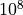

Table of Contents¶
Welcome to ESMPy - The ESMF Python Interface!
Overview¶
ESMPy is a Python interface to the Earth System Modeling Framework (ESMF) regridding utility. ESMF is software for building and coupling weather, climate, and related models. ESMF has a robust, parallel and scalable remapping package, used to generate remapping weights. It can handle a wide variety of grids and options: logically rectangular grids, unstructured meshes and sets of unconnected points; regional or global grids; 2D or 3D; and pole and masking options. ESMF also has capabilities to read grid information from NetCDF files in a variety of formats, including the Climate and Forecast (CF) V1.6 (a.k.a GridSpec), UGRID, ESMF Unstructured and SCRIP conventions.
ESMPy provides a Grid to represent single-tile logically
rectangular coordinate data, a Mesh for unstructured
coordinates, and a LocStream for collections of
unconnected points like observational data streams.
ESMPy supports bilinear, nearest neighbor, higher order patch recovery,
first-order conservative and second-order conservative regridding. There is
also an option to ignore unmapped destination points, mask out points on either
the source or destination, choose straight line or great circle paths when using
spherical coordinates and extrapolate data to points outside of the destination
domain. Regridding on the sphere takes place in 3D Cartesian space, so the pole
problem is not an issue as it commonly is with many Earth system grid remapping
softwares. Grid and Mesh
objects can be created in 2D or 3D space, and 3D conservative regridding is
fully supported.
Regridding, also called remapping or interpolation, is the process of changing the grid underneath field data values while preserving the qualities of the original data. Different kinds of transformations are appropriate for different problems. Regridding may be needed when communicating data between Earth system modeling components such as land and atmosphere, or between different data sets to support analysis or visualization.
Regridding can be broken into two stages. The first stage is generation of an interpolation weight matrix that describes how points in the source grid contribute to points in the destination grid. The second stage is the multiplication of values on the source grid by the interpolation weight matrix to produce the appropriate values on the destination grid. ESMPy provides access to both stages through two separate interfaces.
There are many different interpolation methods, suitable for different problems. In ESMPy, the basic bilinear option is a two dimensional variant of linear interpolation. The higher order patch recovery is a second degree polynomial regridding method, which uses a least squares algorithm to calculate the polynomial. This method gives better derivatives in the resulting destination field than the bilinear. There are two nearest-neighbor methods which map the points from one grid to the nearest corresponding point on the other grid, from either source to destination or vice versa. These are useful for extrapolation or categorical fields.
The first-order conservative regridding is a method designed to preserve the integral of the field across the interpolation from source to destination. It uses the proportion of the area of the overlapping source and destination cells to determine appropriate weights. The second-order conservative method also preserves the integral, but uses the source gradient to give a smoother result than the first-order conservative. All of these methods can be broken down to a simple sparse matrix multiplication operation between interpolation weights and data values.
Important Links¶
The ESMPy home page has all of the latest information on the ESMPy project including release notes, known bugs, supported platforms, and download information.
Please see the ESMF home page for more information on ESMF in general.
Fast Parallel Grid Remapping for Unstructured and Structured Grids gives a nice overview of the ESMF remapping functionality.
The ESMF Regridding Status page gives a good overview of the functionality that is available through various interfaces to ESMF regridding.
The ESMF_RegridWeightGen application is a command-line version of the functionality that is available through ESMPy.
Please contact esmf_support@ucar.edu with any questions or problems.
Installation¶
Requirements¶
The following packages are required to work with ESMPy:
The following packages are optional:
Getting the code¶
The ESMF User’s Guide contains information on building and installing ESMF. The ESMF Reference Manual contains information on the architecture of ESMF, example code, and details of the API (Application Programming Interface).
Instructions on how to download the ESMPy code can be found at the ESMPy Download page.
Anaconda Packages¶
ESMPy conda packages are available through the conda-forge channel:
conda create -n esmpy -c conda-forge esmpy
Specific versions of the conda package can be installed like this:
conda create -n esmpy -c conda-forge esmpy=8.0.1
Installing ESMPy from Source¶
When installing from source, ESMPy requires a pointer to a file named esmf.mk that is generated during an ESMF installation. The path of this file is:
<ESMF_INSTALL_DIR>/lib/lib<g<or>O>/<platform>/esmf.mk
If the ESMFMKFILE flag is set when building ESMPy then it will not need to be
referenced again. If not, an environment variable of the same name must be set
with the path to the esmf.mk file every time a new shell is initiated.
ESMPy can be installed in a custom location using the
--prefix, --home, or --install-base flags to the install command. If this
is done, then this location needs to be added to the PYTHONPATH environment
variable every time a new shell is initiated. If a
custom install location is not specified, ESMPy will be installed in the
standard Python package installation directory on that particular machine.
An installation of ESMPy in the default location for Python packages can be done with the following command issued from the top level ESMPy directory:
python setup.py build --ESMFMKFILE=<DIR_TO_esmf.mk>/esmf.mk install
custom install location:
python setup.py build --ESMFMKFILE=<DIR_TO_esmf.mk>/esmf.mk
python setup.py install --prefix=<custom_install_location>
setenv PYTHONPATH <custom_install_location>/lib/\*/site_packages
Please contact esmf_support@ucar.edu with any questions.
Validation¶
The ESMPy testing is done with the nose package, both in serial and parallel. The nose commands are wrapped in the following ESMPy targets:
python setup.py test
python setup.py test_examples
python setup.py test_regrid_from_file
python setup.py test_parallel
python setup.py test_examples_parallel
python setup.py test_regrid_from_file_parallel
Note
The regrid_from_file tests can take up a lot of memory and bandwidth.
The test_regrid_from_file_dryrun command will simply download the test
files without actually running them (allowing the stress on the machine to
be applied to bandwidth first, and then memory).
Alternatively, individual tests can be run with nose using the following format:
nosetests <file>:<test>
e.g.
nosetests src/ESMF/test/test_api/test_regrid.py:TestRegrid.test_field_regrid
Limitations¶
ESMPy doesn’t include many aspects of ESMF, including components, field bundles, time management, etc. The limitations listed here are relative to ESMF offline and integrated regridding capabilities.
ESMPy cannot use an ESMF installation that is built with external LAPACK support.
Coordinates cannot be retrieved from the elements of a
Mesh. This can affect the ability to setFieldvalues on a sourceMeshcreated from file when using conservative regridding.Multi-tile
Gridsupport is limited to cubed-sphere grids created on 6 processors. A cubed-sphere grid can be created on any number of processors, but only when it is created on 6 processors will the coordinates be retrievable for the entire object. AFieldcreated from a cubed-sphereGridcannot be written to file in parallel.There is no
FieldBundleclass, only singleFields.
Testing related:
Nightly regression testing is limited to a small subset of the ESMF test platforms, including Darwin and Linux running gfortran with openMPI.
Tutorials¶
Hello World¶
import ESMF # This call enables debug logging # esmpy = ESMF.Manager(debug=True) print ("Hello ESMPy World from PET (processor) {0}!".format(ESMF.local_pet()))
Regridding Helper Functions¶
The following code snippets demonstrate how to build all of the pieces
necessary to regrid data between Fields built on
Grids, Meshes
and LocStreams.
LocStream Create¶
def create_locstream_spherical_16(coord_sys=ESMF.CoordSys.SPH_DEG, domask=False):
"""
:param coord_sys: the coordinate system of the LocStream
:param domask: a boolean to tell whether or not to add a mask
:return: LocStream
"""
if ESMF.pet_count() != 1:
raise ValueError("processor count must be 1 to use this function")
locstream = ESMF.LocStream(16, coord_sys=coord_sys)
deg_rad = pi
if coord_sys == ESMF.CoordSys.SPH_DEG:
deg_rad = 180
locstream["ESMF:Lon"] = [0.0, 0.5*deg_rad, 1.5*deg_rad, 2*deg_rad, 0.0, 0.5*deg_rad, 1.5*deg_rad, 2*deg_rad, 0.0, 0.5*deg_rad, 1.5*deg_rad, 2*deg_rad, 0.0, 0.5*deg_rad, 1.5*deg_rad, 2*deg_rad]
locstream["ESMF:Lat"] = [deg_rad/-2.0, deg_rad/-2.0, deg_rad/-2.0, deg_rad/-2.0, -0.25*deg_rad, -0.25*deg_rad, -0.25*deg_rad, -0.25*deg_rad, 0.25*deg_rad, 0.25*deg_rad, 0.25*deg_rad, 0.25*deg_rad, deg_rad/2.0, deg_rad/2.0, deg_rad/2.0, deg_rad/2.0]
if domask:
locstream["ESMF:Mask"] = np.array([1, 0, 0, 1, 1, 1, 1, 1, 1, 1, 1, 1, 1, 1, 1, 1], dtype=np.int32)
return locstream
LocStream Create Parallel¶
def create_locstream_spherical_16_parallel(coord_sys=ESMF.CoordSys.SPH_DEG, domask=False):
"""
:param coord_sys: the coordinate system of the LocStream
:param domask: a boolean to tell whether or not to add a mask
:return: LocStream
"""
if ESMF.pet_count() != 4:
raise ValueError("processor count must be 4 to use this function")
deg_rad = pi
if coord_sys == ESMF.CoordSys.SPH_DEG:
deg_rad = 180.0
locstream = None
if ESMF.local_pet() == 0:
locstream = ESMF.LocStream(4, coord_sys=coord_sys)
locstream["ESMF:Lon"] = [0.0, 0.5*deg_rad, 0.0, 0.5*deg_rad]
locstream["ESMF:Lat"] = [deg_rad/-2.0, deg_rad/-2.0, -0.25*deg_rad, -0.25*deg_rad]
if domask:
locstream["ESMF:Mask"] = np.array([1, 0, 1, 1], dtype=np.int32)
elif ESMF.local_pet() == 1:
locstream = ESMF.LocStream(4, coord_sys=coord_sys)
locstream["ESMF:Lon"] = [1.5*deg_rad, 2*deg_rad, 1.5*deg_rad, 2*deg_rad]
locstream["ESMF:Lat"] = [deg_rad/-2.0, deg_rad/-2.0, -0.25*deg_rad, -0.25*deg_rad]
if domask:
locstream["ESMF:Mask"] = np.array([0, 1, 1, 1], dtype=np.int32)
elif ESMF.local_pet() == 2:
locstream = ESMF.LocStream(4, coord_sys=coord_sys)
locstream["ESMF:Lon"] = [0.0, 0.5*deg_rad, 0.0, 0.5*deg_rad]
locstream["ESMF:Lat"] = [0.25*deg_rad, 0.25*deg_rad, deg_rad/2.0, deg_rad/2.0]
if domask:
locstream["ESMF:Mask"] = np.array([1, 1, 1, 1], dtype=np.int32)
elif ESMF.local_pet() == 3:
locstream = ESMF.LocStream(4, coord_sys=coord_sys)
locstream["ESMF:Lon"] = [1.5*deg_rad, 2*deg_rad, 1.5*deg_rad, 2*deg_rad]
locstream["ESMF:Lat"] = [0.25*deg_rad, 0.25*deg_rad, deg_rad/2.0, deg_rad/2.0]
if domask:
locstream["ESMF:Mask"] = np.array([1, 1, 1, 1], dtype=np.int32)
return locstream
Create a 2D Grid¶
def grid_create_from_coordinates(xcoords, ycoords, xcorners=False, ycorners=False, corners=False, domask=False, doarea=False, ctk=ESMF.TypeKind.R8): """ Create a 2 dimensional Grid using the bounds of the x and y coordiantes. :param xcoords: The 1st dimension or 'x' coordinates at cell centers, as a Python list or numpy Array :param ycoords: The 2nd dimension or 'y' coordinates at cell centers, as a Python list or numpy Array :param xcorners: The 1st dimension or 'x' coordinates at cell corners, as a Python list or numpy Array :param ycorners: The 2nd dimension or 'y' coordinates at cell corners, as a Python list or numpy Array :param domask: boolean to determine whether to set an arbitrary mask or not :param doarea: boolean to determine whether to set an arbitrary area values or not :param ctk: the coordinate typekind :return: grid """ [x, y] = [0, 1] # create a grid given the number of grid cells in each dimension, the center stagger location is allocated, the # Cartesian coordinate system and type of the coordinates are specified max_index = np.array([len(xcoords), len(ycoords)]) grid = ESMF.Grid(max_index, staggerloc=[ESMF.StaggerLoc.CENTER], coord_sys=ESMF.CoordSys.CART, coord_typekind=ctk) # set the grid coordinates using numpy arrays, parallel case is handled using grid bounds gridXCenter = grid.get_coords(x) x_par = xcoords[grid.lower_bounds[ESMF.StaggerLoc.CENTER][x]:grid.upper_bounds[ESMF.StaggerLoc.CENTER][x]] gridXCenter[...] = x_par.reshape((x_par.size, 1)) gridYCenter = grid.get_coords(y) y_par = ycoords[grid.lower_bounds[ESMF.StaggerLoc.CENTER][y]:grid.upper_bounds[ESMF.StaggerLoc.CENTER][y]] gridYCenter[...] = y_par.reshape((1, y_par.size)) # create grid corners in a slightly different manner to account for the bounds format common in CF-like files if corners: grid.add_coords([ESMF.StaggerLoc.CORNER]) lbx = grid.lower_bounds[ESMF.StaggerLoc.CORNER][x] ubx = grid.upper_bounds[ESMF.StaggerLoc.CORNER][x] lby = grid.lower_bounds[ESMF.StaggerLoc.CORNER][y] uby = grid.upper_bounds[ESMF.StaggerLoc.CORNER][y] gridXCorner = grid.get_coords(x, staggerloc=ESMF.StaggerLoc.CORNER) for i0 in range(ubx - lbx - 1): gridXCorner[i0, :] = xcorners[i0+lbx, 0] gridXCorner[i0 + 1, :] = xcorners[i0+lbx, 1] gridYCorner = grid.get_coords(y, staggerloc=ESMF.StaggerLoc.CORNER) for i1 in range(uby - lby - 1): gridYCorner[:, i1] = ycorners[i1+lby, 0] gridYCorner[:, i1 + 1] = ycorners[i1+lby, 1] # add an arbitrary mask if domask: mask = grid.add_item(ESMF.GridItem.MASK) mask[:] = 1 mask[np.where((1.75 <= gridXCenter.any() < 2.25) & (1.75 <= gridYCenter.any() < 2.25))] = 0 # add arbitrary areas values if doarea: area = grid.add_item(ESMF.GridItem.AREA) area[:] = 5.0 return grid
Create a 3D Grid¶
def grid_create_from_coordinates_3d(xcoords, ycoords, zcoords, xcorners=False, ycorners=False, zcorners=False, corners=False, domask=False, doarea=False): """ Create a 3 dimensional Grid using the xcoordinates, ycoordinates and zcoordinates. :param xcoords: The 1st dimension or 'x' coordinates at cell centers, as a Python list or numpy Array :param ycoords: The 2nd dimension or 'y' coordinates at cell centers, as a Python list or numpy Array :param zcoords: The 3rd dimension or 'z' coordinates at cell centers, as a Python list or numpy Array :param xcorners: The 1st dimension or 'x' coordinates at cell corners, as a Python list or numpy Array :param ycorners: The 2nd dimension or 'y' coordinates at cell corners, as a Python list or numpy Array :param zcorners: The 3rd dimension or 'z' coordinates at cell corners, as a Python list or numpy Array :param corners: boolean to determine whether or not to add corner coordinates to this grid :param domask: boolean to determine whether to set an arbitrary mask or not :param doarea: boolean to determine whether to set an arbitrary area values or not :return: grid """ [x, y, z] = [0, 1, 2] # create a grid given the number of grid cells in each dimension, the center stagger location is allocated and the # Cartesian coordinate system is specified max_index = np.array([len(xcoords), len(ycoords), len(zcoords)]) grid = ESMF.Grid(max_index, staggerloc=[ESMF.StaggerLoc.CENTER_VCENTER], coord_sys=ESMF.CoordSys.CART) # set the grid coordinates using numpy arrays, parallel case is handled using grid bounds gridXCenter = grid.get_coords(x) x_par = xcoords[grid.lower_bounds[ESMF.StaggerLoc.CENTER_VCENTER][x]:grid.upper_bounds[ESMF.StaggerLoc.CENTER_VCENTER][x]] gridXCenter[...] = x_par.reshape(x_par.size, 1, 1) gridYCenter = grid.get_coords(y) y_par = ycoords[grid.lower_bounds[ESMF.StaggerLoc.CENTER_VCENTER][y]:grid.upper_bounds[ESMF.StaggerLoc.CENTER_VCENTER][y]] gridYCenter[...] = y_par.reshape(1, y_par.size, 1) gridZCenter = grid.get_coords(z) z_par = zcoords[grid.lower_bounds[ESMF.StaggerLoc.CENTER_VCENTER][z]:grid.upper_bounds[ESMF.StaggerLoc.CENTER_VCENTER][z]] gridZCenter[...] = z_par.reshape(1, 1, z_par.size) # create grid corners in a slightly different manner to account for the bounds format common in CF-like files if corners: grid.add_coords([ESMF.StaggerLoc.CORNER_VFACE]) lbx = grid.lower_bounds[ESMF.StaggerLoc.CORNER_VFACE][x] ubx = grid.upper_bounds[ESMF.StaggerLoc.CORNER_VFACE][x] lby = grid.lower_bounds[ESMF.StaggerLoc.CORNER_VFACE][y] uby = grid.upper_bounds[ESMF.StaggerLoc.CORNER_VFACE][y] lbz = grid.lower_bounds[ESMF.StaggerLoc.CORNER_VFACE][z] ubz = grid.upper_bounds[ESMF.StaggerLoc.CORNER_VFACE][z] gridXCorner = grid.get_coords(x, staggerloc=ESMF.StaggerLoc.CORNER_VFACE) for i0 in range(ubx - lbx - 1): gridXCorner[i0, :, :] = xcorners[i0+lbx, 0] gridXCorner[i0 + 1, :, :] = xcorners[i0+lbx, 1] gridYCorner = grid.get_coords(y, staggerloc=ESMF.StaggerLoc.CORNER_VFACE) for i1 in range(uby - lby - 1): gridYCorner[:, i1, :] = ycorners[i1+lby, 0] gridYCorner[:, i1 + 1, :] = ycorners[i1+lby, 1] gridZCorner = grid.get_coords(z, staggerloc=ESMF.StaggerLoc.CORNER_VFACE) for i2 in range(ubz - lbz - 1): gridZCorner[:, :, i2] = zcorners[i2+lbz, 0] gridZCorner[:, :, i2 + 1] = zcorners[i2+lbz, 1] # add an arbitrary mask if domask: mask = grid.add_item(ESMF.GridItem.MASK) mask[:] = 1 mask[np.where((1.75 < gridXCenter.data < 2.25) & (1.75 < gridYCenter.data < 2.25) & (1.75 < gridZCenter.data < 2.25))] = 0 # add arbitrary areas values if doarea: area = grid.add_item(ESMF.GridItem.AREA) area[:] = 5.0 return grid
Create a Periodic Grid¶
def grid_create_from_coordinates_periodic(longitudes, latitudes, lon_corners=False, lat_corners=False, corners=False, domask=False): """ Create a 2 dimensional periodic Grid using the 'longitudes' and 'latitudes'. :param longitudes: longitude coordinate values at cell centers :param latitudes: latitude coordinate values at cell centers :param lon_corners: longitude coordinate values at cell corners :param lat_corners: latitude coordinate values at cell corners :param corners: boolean to determine whether or not to add corner coordinates to this grid :param domask: boolean to determine whether to set an arbitrary mask or not :return: grid """ [lon, lat] = [0, 1] # create a grid given the number of grid cells in each dimension the center stagger location is allocated max_index = np.array([len(longitudes), len(latitudes)]) grid = ESMF.Grid(max_index, num_peri_dims=1, staggerloc=[ESMF.StaggerLoc.CENTER]) # set the grid coordinates using numpy arrays, parallel case is handled using grid bounds gridXCenter = grid.get_coords(lon) lon_par = longitudes[grid.lower_bounds[ESMF.StaggerLoc.CENTER][lon]:grid.upper_bounds[ESMF.StaggerLoc.CENTER][lon]] gridXCenter[...] = lon_par.reshape((lon_par.size, 1)) gridYCenter = grid.get_coords(lat) lat_par = latitudes[grid.lower_bounds[ESMF.StaggerLoc.CENTER][lat]:grid.upper_bounds[ESMF.StaggerLoc.CENTER][lat]] gridYCenter[...] = lat_par.reshape((1, lat_par.size)) # create grid corners in a slightly different manner to account for the bounds format common in CF-like files if corners: grid.add_coords([ESMF.StaggerLoc.CORNER]) lbx = grid.lower_bounds[ESMF.StaggerLoc.CORNER][lon] ubx = grid.upper_bounds[ESMF.StaggerLoc.CORNER][lon] lby = grid.lower_bounds[ESMF.StaggerLoc.CORNER][lat] uby = grid.upper_bounds[ESMF.StaggerLoc.CORNER][lat] gridXCorner = grid.get_coords(lon, staggerloc=ESMF.StaggerLoc.CORNER) for i0 in range(ubx - lbx - 1): gridXCorner[i0, :] = lon_corners[i0+lbx, 0] gridXCorner[i0 + 1, :] = lon_corners[i0+lbx, 1] gridYCorner = grid.get_coords(lat, staggerloc=ESMF.StaggerLoc.CORNER) for i1 in range(uby - lby - 1): gridYCorner[:, i1] = lat_corners[i1+lby, 0] gridYCorner[:, i1 + 1] = lat_corners[i1+lby, 1] # add an arbitrary mask if domask: mask = grid.add_item(ESMF.GridItem.MASK) mask[:] = 1 mask[np.where((1.75 <= gridXCenter.any() < 2.25) & (1.75 <= gridYCenter.any() < 2.25))] = 0 return grid
Create a 5 Element Mesh¶
def mesh_create_5(): ''' PRECONDITIONS: None POSTCONDITIONS: A 5 element Mesh has been created. RETURN VALUES: \n Mesh :: mesh \n 4.0 31 ------ 32 ------ 33 | | 22 / | | 21 | / | | | / 23 | 2.0 21 ------ 22 ------ 23 | | | | 11 | 12 | | | | 0.0 11 ------ 12 ------ 13 0.0 2.0 4.0 Node Ids at corners Element Ids in centers Note: This mesh is not parallel, it can only be used in serial ''' # Two parametric dimensions, and two spatial dimensions mesh = ESMF.Mesh(parametric_dim=2, spatial_dim=2) num_node = 9 num_elem = 5 nodeId = np.array([11,12,13,21,22,23,31,32,33]) nodeCoord = np.array([0.0,0.0, # node 11 2.0,0.0, # node 12 4.0,0.0, # node 13 0.0,2.0, # node 21 2.0,2.0, # node 22 4.0,2.0, # node 23 0.0,4.0, # node 31 2.0,4.0, # node 32 4.0,4.0]) # node 33 nodeOwner = np.zeros(num_node) elemId = np.array([11,12,21,22,23]) elemType=np.array([ESMF.MeshElemType.QUAD, ESMF.MeshElemType.QUAD, ESMF.MeshElemType.QUAD, ESMF.MeshElemType.TRI, ESMF.MeshElemType.TRI]) elemConn=np.array([0,1,4,3, # element 11 1,2,5,4, # element 12 3,4,7,6, # element 21 4,8,7, # element 22 4,5,8]) # element 23 elemCoord = np.array([1.0, 1.0, 3.0, 1.0, 1.0, 3.0, 2.5, 3.5, 3.5, 2.5]) mesh.add_nodes(num_node,nodeId,nodeCoord,nodeOwner) mesh.add_elements(num_elem,elemId,elemType,elemConn, element_coords=elemCoord) return mesh, nodeCoord, nodeOwner, elemType, elemConn, elemCoord
Create a Field¶
def create_field(gml, name): ''' PRECONDITIONS: An Grid, Mesh or LocStream has been created, and 'name' is a string that will be used to initialize the name of a new Field.\n POSTCONDITIONS: A Field has been created.\n RETURN VALUES: \n Field :: field \n ''' field = Field(gml, name=name) return field
Initialize an Analytic Field¶
def initialize_field_grid_periodic(field): ''' PRECONDITIONS: A Field has been created as 'field' with a 'grid' where coordinates have been set on both the center and corner stagger locations. \n POSTCONDITIONS: The 'field' has been initialized to an analytic field.\n RETURN VALUES: \n Field :: field \n ''' DEG2RAD = 3.141592653589793/180.0 # get the coordinate pointers and set the coordinates [x,y] = [0, 1] gridXCoord = field.grid.get_coords(x, ESMF.StaggerLoc.CENTER) gridYCoord = field.grid.get_coords(y, ESMF.StaggerLoc.CENTER) field.data[:] = 2.0 + np.cos(DEG2RAD*gridXCoord)**2 * \ np.cos(2.0*DEG2RAD*(90.0 - gridYCoord)) return field
Run ESMPy Regridding¶
def run_regridding(srcfield, dstfield, srcfracfield, dstfracfield): # This is for documentation. Do not modify. ''' PRECONDITIONS: Two Fields have been created and a regridding operation is desired from 'srcfield' to 'dstfield'. The 'srcfracfield' and 'dstfractfield' are Fields created to hold the fractions of the source and destination fields which contribute to conservative regridding.\n POSTCONDITIONS: A regridding operation has set the data on 'dstfield', 'srcfracfield', and 'dstfracfield'.\n RETURN VALUES: \n Field :: dstfield \n Field :: srcfracfield \n Field :: dstfracfield \n ''' # call the regridding functions regridSrc2Dst = ESMF.Regrid(srcfield, dstfield, regrid_method=ESMF.RegridMethod.CONSERVE, unmapped_action=ESMF.UnmappedAction.ERROR, src_frac_field=srcfracfield, dst_frac_field=dstfracfield) dstfield = regridSrc2Dst(srcfield, dstfield) return dstfield, srcfracfield, dstfracfield
Compute Field Mass¶
def compute_mass_grid(valuefield, dofrac=False, fracfield=None, uninitval=422397696.): ''' PRECONDITIONS: 'fracfield' contains the fractions of each cell which contributed to a regridding operation involving 'valuefield. 'dofrac' is a boolean value that gives the option to not use the 'fracfield'.\n POSTCONDITIONS: The mass of the data field is computed.\n RETURN VALUES: float :: mass \n ''' mass = 0.0 areafield = ESMF.Field(valuefield.grid, name='areafield') areafield.get_area() ind = np.where(valuefield.data != uninitval) if dofrac: mass = np.sum(areafield.data[ind] * valuefield.data[ind] * fracfield.data[ind]) else: mass = np.sum(areafield.data[ind] * valuefield.data[ind]) return mass
Regridding¶
The following stand alone scripts demonstrate how to use regridding between
Fields built on
Grids, Meshes
and LocStreams. These scripts
can be run in serial or parallel with no modification.
Grid, Mesh and Field Created from File¶
# This example demonstrates how to create ESMPy Grid, Mesh and Field objects # from file and use them for regridding. # The data files can be retrieved from the ESMF data repository by uncommenting the # following block of code: # # import os # DD = os.path.join(os.getcwd(), "examples/data") # if not os.path.isdir(DD): # os.makedirs(DD) # from ESMF.util.cache_data import cache_data_file # cache_data_file(os.path.join(DD, "so_Omon_GISS-E2.nc")) # cache_data_file(os.path.join(DD, "mpas_uniform_10242_dual_counterclockwise.nc")) import os import ESMF # This call enables debug logging # ESMF.Manager(debug=True) # Set up the DATADIR DATADIR = os.path.join(os.getcwd(), "examples/data") # Create a global grid from a GRIDSPEC formatted file grid = ESMF.Grid(filename=os.path.join(DATADIR, "so_Omon_GISS-E2.nc"), filetype=ESMF.FileFormat.GRIDSPEC) # Create a field on the centers of the grid, with extra dimensions srcfield = ESMF.Field(grid, staggerloc=ESMF.StaggerLoc.CENTER, ndbounds=[33, 2]) # Read the field data from file srcfield.read(filename=os.path.join(DATADIR, "so_Omon_GISS-E2.nc"), variable="so", timeslice=2) # Create an ESMF formatted unstructured mesh with clockwise cells removed mesh = ESMF.Mesh(filename=os.path.join(DATADIR, "mpas_uniform_10242_dual_counterclockwise.nc"), filetype=ESMF.FileFormat.ESMFMESH) # Create a field on the nodes of the mesh dstfield = ESMF.Field(mesh, meshloc=ESMF.MeshLoc.NODE, ndbounds=[33, 2]) dstfield.data[:] = 1e20 # compute the weight matrix for regridding regrid = ESMF.Regrid(srcfield, dstfield, regrid_method=ESMF.RegridMethod.BILINEAR, unmapped_action=ESMF.UnmappedAction.IGNORE) # calculate the regridding from source to destination field dstfield = regrid(srcfield, dstfield) if ESMF.local_pet() == 0: print ("Fields created from file regridded successfully :)")
Read and Write a Weight File¶
# This example demonstrates how to regrid between a Grid and a Mesh. # The data files can be retrieved from the ESMF data repository by uncommenting the # following block of code: # # import os # DD = os.path.join(os.getcwd(), "examples/data") # if not os.path.isdir(DD): # os.makedirs(DD) # from ESMF.util.cache_data import cache_data_file # cache_data_file(os.path.join(DD, "ll2.5deg_grid.nc")) # cache_data_file(os.path.join(DD, "mpas_uniform_10242_dual_counterclockwise.nc")) import ESMF import numpy import ESMF.util.helpers as helpers import ESMF.api.constants as constants # This call enables debug logging mg = ESMF.Manager(debug=True) # ESMPy uses Fortran style dimension ordering (as of November 2017) [lat,lon] = [1,0] # Create the source grid from memory with periodic dimension specified. lons = numpy.arange(5, 350.1, 10) lats = numpy.arange(-85, 85.1, 10) srcgrid = ESMF.Grid(numpy.array([lons.size, lats.size]), coord_sys=ESMF.CoordSys.SPH_DEG, staggerloc=ESMF.StaggerLoc.CENTER, num_peri_dims=1, periodic_dim=0, pole_dim=1) # Get and set the source grid coordinates. srcGridCoordLon = srcgrid.get_coords(lon) srcGridCoordLat = srcgrid.get_coords(lat) slons_par = lons[srcgrid.lower_bounds[ESMF.StaggerLoc.CENTER][0]:srcgrid.upper_bounds[ESMF.StaggerLoc.CENTER][0]] slats_par = lats[srcgrid.lower_bounds[ESMF.StaggerLoc.CENTER][1]:srcgrid.upper_bounds[ESMF.StaggerLoc.CENTER][1]] # make sure to use indexing='ij' as ESMPy backend uses matrix indexing (not Cartesian) lonm, latm = numpy.meshgrid(slons_par, slats_par, indexing='ij') srcGridCoordLon[:] = lonm srcGridCoordLat[:] = latm # Create the dest grid from memory with periodic dimension specified. lons = numpy.arange(2.5, 357.6, 5) lats = numpy.arange(-87.5, 87.6, 5) dstgrid = ESMF.Grid(numpy.array([lons.size, lats.size]), coord_sys=ESMF.CoordSys.SPH_DEG, staggerloc=ESMF.StaggerLoc.CENTER, num_peri_dims=1, periodic_dim=1, pole_dim=0) # Get and set the source grid coordinates. dstGridCoordLat = dstgrid.get_coords(lat) dstGridCoordLon = dstgrid.get_coords(lon) dlons_par = lons[dstgrid.lower_bounds[ESMF.StaggerLoc.CENTER][0]:dstgrid.upper_bounds[ESMF.StaggerLoc.CENTER][0]] dlats_par = lats[dstgrid.lower_bounds[ESMF.StaggerLoc.CENTER][1]:dstgrid.upper_bounds[ESMF.StaggerLoc.CENTER][1]] # make sure to use indexing='ij' as ESMPy backend uses matrix indexing (not Cartesian) lonm, latm = numpy.meshgrid(dlons_par, dlats_par, indexing='ij') dstGridCoordLon[:] = lonm dstGridCoordLat[:] = latm # Create a field on the centers of the source grid with the mask applied. srcfield = ESMF.Field(srcgrid, name="srcfield", staggerloc=ESMF.StaggerLoc.CENTER) # Create a field on the centers of the source grid with the mask applied. dstfield = ESMF.Field(dstgrid, name="dstfield", staggerloc=ESMF.StaggerLoc.CENTER) xctfield = ESMF.Field(dstgrid, name="xctfield", staggerloc=ESMF.StaggerLoc.CENTER) gridLon = srcfield.grid.get_coords(lon, ESMF.StaggerLoc.CENTER) gridLat = srcfield.grid.get_coords(lat, ESMF.StaggerLoc.CENTER) # wave = lambda x,k: numpy.sin(x*k*numpy.pi/180.0) # srcfield.data[...] = numpy.outer(wave(slons_par,3), wave(slats_par,3)) + 2 srcfield.data[:,:] = 2.0 + numpy.cos(numpy.radians(srcGridCoordLat)[...])**2 * \ numpy.cos(2.0*numpy.radians(srcGridCoordLon)[...]) # wave = lambda x,k: numpy.sin(x*k*numpy.pi/180.0) # xctfield.data[...] = numpy.outer(wave(dlons_par,3), wave(dlats_par,3)) + 2 xctfield.data[:,:] = 2.0 + numpy.cos(numpy.radians(dstGridCoordLat)[...])**2 * \ numpy.cos(2.0*numpy.radians(dstGridCoordLon)[...]) dstfield.data[:] = 1e20 # write regridding weights to file filename = "esmpy_example_weight_file.nc" if ESMF.local_pet() == 0: import os if os.path.isfile( os.path.join(os.getcwd(), filename)): os.remove(os.path.join(os.getcwd(), filename)) mg.barrier() regrid = ESMF.Regrid(srcfield, dstfield, filename=filename, regrid_method=ESMF.RegridMethod.BILINEAR, unmapped_action=ESMF.UnmappedAction.IGNORE) # # create a regrid object from file regrid = ESMF.RegridFromFile(srcfield, dstfield, filename) # calculate the regridding from source to destination field dstfield = regrid(srcfield, dstfield) # compute the mean relative error num_nodes = numpy.prod(xctfield.data.shape[:]) relerr = 0 meanrelerr = 0 if num_nodes != 0: relerr = numpy.sum(numpy.abs(dstfield.data - xctfield.data) / numpy.abs(xctfield.data)) meanrelerr = relerr / num_nodes # handle the parallel case if ESMF.pet_count() > 1: relerr = helpers.reduce_val(relerr, op=constants.Reduce.SUM) num_nodes = helpers.reduce_val(num_nodes, op=constants.Reduce.SUM) # output the results from one processor only if ESMF.local_pet() == 0: meanrelerr = relerr / num_nodes print ("ESMPy Grid Mesh Regridding Example") print (" interpolation mean relative error = {0}".format(meanrelerr)) if os.path.isfile(os.path.join(os.getcwd(), filename)): os.remove(os.path.join(os.getcwd(), filename)) # set to 1 to output results # if ESMF.pet_count() == 0: # import matplotlib.pyplot as plt # fig = plt.figure(1, (15, 6)) # fig.suptitle('ESMPy Periodic Grids', fontsize=14, fontweight='bold') # # ax = fig.add_subplot(1, 2, 1) # im = ax.imshow(srcfield.data, vmin=1, vmax=3, cmap='gist_ncar', aspect='auto', # extent=[min(slons_par), max(slons_par), min(slats_par), max(slats_par)]) # ax.set_xbound(lower=min(slons_par), upper=max(slons_par)) # ax.set_ybound(lower=min(slats_par), upper=max(slats_par)) # ax.set_xlabel("Longitude") # ax.set_ylabel("Latitude") # ax.set_title("Source Data") # # ax = fig.add_subplot(1, 2, 2) # im = ax.imshow(dstfield.data, vmin=1, vmax=3, cmap='gist_ncar', aspect='auto', # extent=[min(dlons_par), max(dlons_par), min(dlats_par), max(dlats_par)]) # ax.set_xlabel("Longitude") # ax.set_ylabel("Latitude") # ax.set_title("Regrid Solution") # # fig.subplots_adjust(right=0.8) # cbar_ax = fig.add_axes([0.9, 0.1, 0.01, 0.8]) # fig.colorbar(im, cax=cbar_ax) # # plt.show()
Grid to LocStream¶
# This example demonstrates how to regrid between a Grid and a LocStream. # The data files can be retrieved from the ESMF data repository by uncommenting the # following block of code: # # import os # DD = os.path.join(os.getcwd(), "examples/data") # if not os.path.isdir(DD): # os.makedirs(DD) # from ESMF.util.cache_data import cache_data_file # cache_data_file(os.path.join(DD, "ll1deg_grid.nc")) try: from unittest import SkipTest except ImportError: from nose import SkipTest import ESMF import numpy import ESMF.util.helpers as helpers import ESMF.api.constants as constants # This call enables debug logging ESMF.Manager(debug=True) from ESMF.util.locstream_utilities import create_locstream_spherical_16, create_locstream_spherical_16_parallel coord_sys=ESMF.CoordSys.SPH_DEG domask=True if ESMF.pet_count() == 1: locstream = create_locstream_spherical_16(coord_sys=coord_sys, domask=domask) else: if constants._ESMF_MPIRUN_NP != 4: raise SkipTest('processor count must be 4 or 1 for this example') else: locstream = create_locstream_spherical_16_parallel(coord_sys=coord_sys, domask=domask) grid1 = "examples/data/ll1deg_grid.nc" grid = ESMF.Grid(filename=grid1, filetype=ESMF.FileFormat.SCRIP) # create a field srcfield = ESMF.Field(grid, name='srcfield') dstfield = ESMF.Field(locstream, name='dstfield') xctfield = ESMF.Field(locstream, name='xctfield') # initialize the fields [x, y] = [0, 1] deg2rad = 3.14159/180 gridXCoord = srcfield.grid.get_coords(x) gridYCoord = srcfield.grid.get_coords(y) srcfield.data[...] = 10.0 + numpy.cos(gridXCoord * deg2rad) ** 2 + numpy.cos(2 * gridYCoord * deg2rad) gridXCoord = locstream["ESMF:Lon"] gridYCoord = locstream["ESMF:Lat"] if coord_sys == ESMF.CoordSys.SPH_DEG: xctfield.data[...] = 10.0 + numpy.cos(gridXCoord * deg2rad) ** 2 + numpy.cos(2 * gridYCoord * deg2rad) elif coord_sys == ESMF.CoordSys.SPH_RAD: xctfield.data[...] = 10.0 + numpy.cos(gridXCoord) ** 2 + numpy.cos(2 * gridYCoord) else: raise ValueError("coordsys value does not work in this example") dstfield.data[...] = 1e20 # create an object to regrid data from the source to the destination field dst_mask_values=None if domask: dst_mask_values=numpy.array([0]) regrid = ESMF.Regrid(srcfield, dstfield, regrid_method=ESMF.RegridMethod.BILINEAR, unmapped_action=ESMF.UnmappedAction.ERROR, dst_mask_values=dst_mask_values) # do the regridding from source to destination field dstfield = regrid(srcfield, dstfield, zero_region=ESMF.Region.SELECT) # compute the mean relative error num_nodes = numpy.prod(xctfield.data.shape[:]) relerr = 0 meanrelerr = 0 dstfield = numpy.ravel(dstfield.data) xctfield = numpy.ravel(xctfield.data) if num_nodes != 0: ind = numpy.where((dstfield != 1e20) & (xctfield != 0))[0] relerr = numpy.sum(numpy.abs(dstfield[ind] - xctfield[ind]) / numpy.abs(xctfield[ind])) meanrelerr = relerr / num_nodes # handle the parallel case if ESMF.pet_count() > 1: relerr = helpers.reduce_val(relerr, op=constants.Reduce.SUM) num_nodes = helpers.reduce_val(num_nodes, op=constants.Reduce.SUM) # output the results from one processor only if ESMF.local_pet() == 0: meanrelerr = relerr / num_nodes print ("ESMPy Grid LocStream Regridding Example") print (" interpolation mean relative error = {0}".format(meanrelerr)) assert (meanrelerr < 2e-2)
Mesh to LocStream¶
# This example demonstrates how to regrid between a mesh and a locstream. try: from unittest import SkipTest except ImportError: from nose import SkipTest import ESMF import numpy import ESMF.util.helpers as helpers import ESMF.api.constants as constants # This call enables debug logging # ESMF.Manager(debug=True) from ESMF.util.mesh_utilities import mesh_create_5, mesh_create_5_parallel from ESMF.util.locstream_utilities import create_locstream_16, create_locstream_16_parallel if ESMF.pet_count() == 1: mesh, _, _, _, _, _ = mesh_create_5() locstream = create_locstream_16() else: if constants._ESMF_MPIRUN_NP != 4: raise SkipTest('processor count must be 4 or 1 for this example') else: mesh, _, _, _, _ = mesh_create_5_parallel() locstream = create_locstream_16_parallel() # create a field srcfield = ESMF.Field(mesh, name='srcfield')#, meshloc=ESMF.MeshLoc.ELEMENT) # create a field on the locstream dstfield = ESMF.Field(locstream, name='dstfield') xctfield = ESMF.Field(locstream, name='xctfield') # initialize the fields [x, y] = [0, 1] deg2rad = 3.14159/180 gridXCoord = srcfield.grid.get_coords(x) gridYCoord = srcfield.grid.get_coords(y) srcfield.data[...] = 10.0 + (gridXCoord * deg2rad) ** 2 + (gridYCoord * deg2rad) ** 2 gridXCoord = locstream["ESMF:X"] gridYCoord = locstream["ESMF:Y"] xctfield.data[...] = 10.0 + (gridXCoord * deg2rad) ** 2 + (gridYCoord * deg2rad) ** 2 dstfield.data[...] = 1e20 # create an object to regrid data from the source to the destination field # TODO: this example seems to fail occasionally with UnmappedAction.ERROR, probably due to a tolerance issue - ask Bob regrid = ESMF.Regrid(srcfield=srcfield, dstfield=dstfield, regrid_method=ESMF.RegridMethod.BILINEAR, unmapped_action=ESMF.UnmappedAction.IGNORE) # do the regridding from source to destination field dstfield = regrid(srcfield, dstfield) # compute the mean relative error num_nodes = numpy.prod(xctfield.data.shape[:]) relerr = 0 meanrelerr = 0 if num_nodes != 0: ind = numpy.where((dstfield.data != 1e20) & (xctfield.data != 0))[0] relerr = numpy.sum(numpy.abs(dstfield.data[ind] - xctfield.data[ind]) / numpy.abs(xctfield.data[ind])) meanrelerr = relerr / num_nodes # handle the parallel case if ESMF.pet_count() > 1: relerr = helpers.reduce_val(relerr, op=constants.Reduce.SUM) num_nodes = helpers.reduce_val(num_nodes, op=constants.Reduce.SUM) # output the results from one processor only if ESMF.local_pet() == 0: meanrelerr = relerr / num_nodes print ("ESMPy Grid Mesh Regridding Example") print (" interpolation mean relative error = {0}".format(meanrelerr)) assert (meanrelerr < 3e-5)
LocStream to Grid¶
# This example demonstrates how to regrid between a LocStream and a Grid. # The data files can be retrieved from the ESMF data repository by uncommenting the # following block of code: # # import os # DD = os.path.join(os.getcwd(), "examples/data") # if not os.path.isdir(DD): # os.makedirs(DD) # from ESMF.util.cache_data import cache_data_file # cache_data_file(os.path.join(DD, "ll1deg_grid.nc")) try: from unittest import SkipTest except ImportError: from nose import SkipTest import ESMF import numpy import ESMF.util.helpers as helpers import ESMF.api.constants as constants # This call enables debug logging ESMF.Manager(debug=True) grid1 = "examples/data/ll1deg_grid.nc" grid = ESMF.Grid(filename=grid1, filetype=ESMF.FileFormat.SCRIP) from ESMF.util.locstream_utilities import create_locstream_spherical_16, create_locstream_spherical_16_parallel coord_sys=ESMF.CoordSys.SPH_DEG domask=True if ESMF.pet_count() == 1: locstream = create_locstream_spherical_16(coord_sys=coord_sys, domask=domask) else: if constants._ESMF_MPIRUN_NP != 4: raise SkipTest('processor count must be 4 or 1 for this example') else: locstream = create_locstream_spherical_16_parallel(coord_sys=coord_sys, domask=domask) # create a field srcfield = ESMF.Field(locstream, name='srcfield') dstfield = ESMF.Field(grid, name='dstfield') xctfield = ESMF.Field(grid, name='xctfield') # initialize the fields [x, y] = [0, 1] deg2rad = 3.14159/180 gridXCoord = locstream["ESMF:Lon"] gridYCoord = locstream["ESMF:Lat"] if coord_sys == ESMF.CoordSys.SPH_DEG: srcfield.data[...] = 10.0 + numpy.cos(gridXCoord * deg2rad) ** 2 + numpy.cos(2 * gridYCoord * deg2rad) elif coord_sys == ESMF.CoordSys.SPH_RAD: srcfield.data[...] = 10.0 + numpy.cos(gridXCoord) ** 2 + numpy.cos(2 * gridYCoord) else: raise ValueError("coordsys value does not apply in this example") gridXCoord = xctfield.grid.get_coords(x) gridYCoord = xctfield.grid.get_coords(y) xctfield.data[...] = 10.0 + numpy.cos(gridXCoord * deg2rad) ** 2 + numpy.cos(2 * gridYCoord * deg2rad) dstfield.data[...] = 1e20 # create an object to regrid data from the source to the destination field mask_values=None if domask: mask_values=numpy.array([0]) regrid = ESMF.Regrid(srcfield, dstfield, regrid_method=ESMF.RegridMethod.NEAREST_DTOS, unmapped_action=ESMF.UnmappedAction.ERROR, src_mask_values=mask_values) # do the regridding from source to destination field dstfield = regrid(srcfield, dstfield, zero_region=ESMF.Region.SELECT) # compute the mean relative error from operator import mul num_nodes = numpy.prod(xctfield.data.shape[:]) relerr = 0 meanrelerr = 0 dstfield = numpy.ravel(dstfield.data) xctfield = numpy.ravel(xctfield.data) if num_nodes is not 0: ind = numpy.where((dstfield != 1e20) & (xctfield != 0))[0] relerr = numpy.sum(numpy.abs(dstfield[ind] - xctfield[ind]) / numpy.abs(xctfield[ind])) meanrelerr = relerr / num_nodes # handle the parallel case if ESMF.pet_count() > 1: relerr = helpers.reduce_val(relerr, op=constants.Reduce.SUM) num_nodes = helpers.reduce_val(num_nodes, op=constants.Reduce.SUM) # output the results from one processor only if ESMF.local_pet() is 0: meanrelerr = relerr / num_nodes print ("ESMPy LocStream Grid Regridding Example") print (" interpolation mean relative error = {0}".format(meanrelerr)) assert (meanrelerr < 9e-5)
Using MPI.Spawn() from a Serial Python Driver¶
# This example demonstrates how to call ESMPy regridding as a parallel # subprocess spawned using mpi4py from a serial Python driver. # # NOTE: MPI.COMM_WORLD.Spawn does not seem to work for mpi4py installations # installations built with mpich, however openmpi does work (July 2016). # # The data files can be retrieved from the ESMF data repository by uncommenting the # following block of code: # # import os # DD = os.path.join(os.getcwd(), "examples/data") # if not os.path.isdir(DD): # os.makedirs(DD) # from ESMF.util.cache_data import cache_data_file # cache_data_file(os.path.join(DD, "ll1deg_grid.nc")) # cache_data_file(os.path.join(DD, "mpas_uniform_10242_dual_counterclockwise.nc")) import numpy from mpi4py import MPI import sys def regrid(): try: import ESMF except: raise ImportError("ESMF is not available on this machine") grid1 = "examples/data/ll1deg_grid.nc" grid2 = "examples/data/mpas_uniform_10242_dual_counterclockwise.nc" # Create a uniform global latlon grid from a SCRIP formatted file grid = ESMF.Grid(filename=grid1, filetype=ESMF.FileFormat.SCRIP) # NOTE: corners are needed for conservative regridding # grid = ESMF.Grid(filename=grid1, filetype=ESMF.FileFormat.SCRIP, # add_corner_stagger=True) # create a field on the center stagger locations of the source grid srcfield = ESMF.Field(grid, name='srcfield', staggerloc=ESMF.StaggerLoc.CENTER) # create an ESMF formatted unstructured mesh with clockwise cells removed mesh = ESMF.Mesh(filename=grid2, filetype=ESMF.FileFormat.ESMFMESH) # create a field on the nodes of the destination mesh dstfield = ESMF.Field(mesh, name='dstfield', meshloc=ESMF.MeshLoc.NODE) xctfield = ESMF.Field(mesh, name='xctfield', meshloc=ESMF.MeshLoc.NODE) # NOTE: Field must be built on elements of Mesh for conservative regridding # dstfield = ESMF.Field(mesh, name='dstfield', meshloc=ESMF.MeshLoc.ELEMENT) # xctfield = ESMF.Field(mesh, name='xctfield', meshloc=ESMF.MeshLoc.ELEMENT) # initialize the fields [lon, lat] = [0, 1] deg2rad = 3.14159 / 180 gridXCoord = srcfield.grid.get_coords(lon, ESMF.StaggerLoc.CENTER) gridYCoord = srcfield.grid.get_coords(lat, ESMF.StaggerLoc.CENTER) srcfield.data[...] = 10.0 + (gridXCoord * deg2rad) ** 2 + ( gridYCoord * deg2rad) ** 2 gridXCoord = xctfield.grid.get_coords(lon, ESMF.StaggerLoc.CENTER) gridYCoord = xctfield.grid.get_coords(lat, ESMF.StaggerLoc.CENTER) xctfield.data[...] = 10.0 + (gridXCoord * deg2rad) ** 2 + ( gridYCoord * deg2rad) ** 2 dstfield.data[...] = 1e20 # create an object to regrid data from the source to the destination field regrid = ESMF.Regrid(srcfield, dstfield, regrid_method=ESMF.RegridMethod.BILINEAR, unmapped_action=ESMF.UnmappedAction.ERROR) # do the regridding from source to destination field dstfield = regrid(srcfield, dstfield) return dstfield, xctfield def compute_error(dstfield, xctfield): # compute the mean relative error from operator import mul num_nodes = reduce(mul, xctfield.shape) relerr = 0 meanrelerr = 0 if num_nodes != 0: ind = numpy.where((dstfield != 1e20) & (xctfield != 0))[0] relerr = numpy.sum( numpy.abs(dstfield[ind] - xctfield[ind]) / numpy.abs( xctfield[ind])) meanrelerr = relerr / num_nodes meanrelerr = relerr / num_nodes print "ESMPy regridding as a spawned MPI process:" print " interpolation mean relative error = {0}".format(meanrelerr) ########################################### MAIN ############################# start_worker = 'worker' usage = 'Program should be started without arguments' pet_count = 4 # Parent if len(sys.argv) == 1: # Spawn workers comm = MPI.COMM_WORLD.Spawn( sys.executable, args=[sys.argv[0], start_worker], maxprocs=pet_count) # gather output fields from workers dstfield = None dstfield = comm.gather(dstfield, root=MPI.ROOT) dstfield = numpy.concatenate([dstfield[i] for i in range(pet_count)]) xctfield = None xctfield = comm.gather(xctfield, root=MPI.ROOT) xctfield = numpy.concatenate([xctfield[i] for i in range(pet_count)]) # plot results compute_error(dstfield, xctfield) # Shutdown comm.Disconnect() # Worker elif sys.argv[1] == start_worker: # Connect to parent try: comm = MPI.Comm.Get_parent() rank = comm.Get_rank() except: raise ValueError('Could not connect to parent - ' + usage) try: # call ESMPy regridding dstfield, xctfield = regrid() # send output to parent comm.gather(sendobj=dstfield.data, root=0) comm.gather(sendobj=xctfield.data, root=0) except: comm.Disconnect() # Shutdown comm.Disconnect() # Catch else: raise ValueError(usage)
API¶
Classes¶
ESMPy uses a Field object to represent data variables
built on an underlying spatial discretization, which is represented by a
Grid, Mesh or
LocStream.
Regridding between Fields is accomplished with the
Regrid class. All of these classes are explained in
more detail in the sections provided by the links in the following table.
Class |
Description |
|---|---|
A manager class to initialize and finalize ESMF |
|
A class to represent a logically rectangular grid |
|
A class to represent an unstructured grid |
|
A class to represent observational data as a collection of disconnected points |
|
The regridding utility |
|
The from file regridding utility |
Named Constants¶
ESMPy follows the ESMF convention of using “named constants” to represent the available options for parameters that expect a variety of specific inputs. The following table lists the available named constants and provides links to pages that further explain the available values.
Named constants |
Description |
|---|---|
Specify the coordinate system of a |
|
Specify the format of a data file |
|
Specify the mode of a data file |
|
Specify a mask or area item on a |
|
Specify the type of line that connects two points on a sphere |
|
Specify how much logging should be done |
|
Specify the type of the |
|
Specify a nodal or elemental |
|
Specify the type of normalization to use for conservative regridding weights |
|
Specify the type of connection that appears at the poles of the |
|
Specify which type of artificial pole to construct on the source |
|
Specify various regions in the data layout of |
|
Specify which interpolation method to use regridding |
|
Specify the position for data in a |
|
Specify the type and kind of data |
|
Specify which action to take with respect to unmapped destination points |
Manager¶
The Manager is used by ESMPy to simplify a
number of low-level calls used by the underlying ESMF framework to allocate
resources, enable logging, and control garbage collection.
Resource Allocation¶
The ESMF Virtual Machine (VM) ESMF Virtual Machine (VM)
is created at the beginning of each ESMPy execution, and contains information
about the topology and characteristics of the underlying computer. The VM
allocates computational resources in the form of
Persistent Execution Threads, or PETs. These are equivalent to operating
system threads with a lifetime of at least that of the ESMPy execution. In the
simplest, and most common case, a PET is equivalent to an MPI process. The
number of PETs and the current PET can be queried from the
Manager:
mg = ESMF.Manager()
pet_count = mg.pet_count()
local_pet = mg.local_pet()
Logging¶
The Manager is also used to enable logging:
mg = ESMF.Manager(debug=True)
local_pet = mg.local_pet()
The output will be logged in files named PET<local_pet>.ESMF_LogFile.
Garbage Collection¶
The underlying ESMF framework needs to be initialized and finalized once and
only once per execution. This is handled internally by the
Manager and does not require any explicit
user intervention. However, the ESMF garbage collection feature is not triggered
until the finalization routine is invoked. So if memory deallocation of ESMPy
objects is required prior to the end of the program, the class level
destroy routines should be invoked:
mg = ESMF.Manager()
mg.destroy()
This is commonly required when reusing a Regrid object
to interpolate data between many Field pairs to
conserve memory to complete all interpolations in a single execution.
Spatial Discretization Objects¶
There are three different objects used for spatial coordinate representation:
Grid, Mesh, and LocStream. Grids are used to represent logically rectangular
grids, Meshes are used for unstructured collections of polygons, and
LocStreams are used for unstructured collections of individual points. These
objects are nearly identical counterparts to the objects of the same name in
ESMF, with some simplifications for ease of use in the Python environment.
Grid¶
The Grid is used to represent the geometry and discretization of logically
rectangular physical grids. The Grid can also hold information that can used in
calculations involving the Grid, like a mask or the cell areas. The ESMF reference
manual has an in-depth description of the
Grid class.
Staggering¶
Staggering is a finite difference technique in which the values of different physical quantities are placed at different locations within a grid cell.
The ESMF Grid class supports a variety of stagger locations, including cell
centers, corners, and edge centers. The default stagger location in ESMF is the
cell center, and cell counts in Grid are based on this assumption. Combinations
of the 2D ESMF stagger locations are sufficient to specify any of the Arakawa
staggers. ESMF also supports staggering in 3D and higher dimensions. There are
shortcuts for standard staggers, and interfaces through which users can create
custom staggers.
As a default the ESMF Grid class provides symmetric staggering, so that cell
centers are enclosed by cell perimeter (e.g. corner) stagger locations. This
means the coordinate arrays for stagger locations other than the center will
have an additional element of padding in order to enclose the cell center
locations. However, to achieve other types of staggering, the user may alter or
eliminate this padding by using the appropriate options when adding coordinates
to a Grid.
Grid staggers are indicated using
StaggerLoc.
grid = ESMF.Grid(np.array([3,4]), staggerloc=ESMF.StaggerLoc.CENTER)
Spherical Coordinates¶
In the case that the Grid is on a sphere (coord_sys = ESMF.api.constants.CoordSys.SPH_DEG or
ESMF.api.constants.CoordSys.SPH_RAD) then the coordinates given in the Grid are interpreted
as latitude and longitude values. The coordinates can either be in degrees or
radians as indicated by the coord_sys flag set during Grid creation. As is
true with many global models, this application currently assumes the latitude
and longitude refer to positions on a perfect sphere.
The Grid coordinate system is represented using
CoordSys.
grid = ESMF.Grid(np.array([3,4]), staggerloc=ESMF.StaggerLoc.CENTER,
coord_sys=ESMF.CoordSys.SPH_DEG)
Periodicity¶
A periodic connection can be specified when building Grids in spherical
coordinates. The num_peri_dims parameter indicates the total number of
periodic dimensions and periodic_dim is used to identify which dimensions
should be considered periodic. There must always be at least one non-periodic
dimension. For example, to create a global latitude-longitude Grid there would
be one periodic dimension, dimension 0 (longitude).
grid = ESMF.Grid(np.array([3,4]), staggerloc=ESMF.StaggerLoc.CENTER,
coord_sys=ESMF.CoordSys.SPH_DEG,
num_peri_dims=1, periodic_dim=0)
Pole Generation¶
The Grid can generate an artificial pole by using the pole_dim parameter. This
can be helpful for regridding operations to smooth out the interpolated values
in the polar region. For the example of creating a global latitude-longitude
Grid, the pole dimension would be 1 (latitude).
grid = ESMF.Grid(np.array([3,4]), staggerloc=ESMF.StaggerLoc.CENTER,
coord_sys=ESMF.CoordSys.SPH_DEG,
num_peri_dims=1, periodic_dim=0, pole_dim=1)
Masking¶
Masking is the process used to mark parts of a Grid to be ignored during an
operation. Marking Grid cells as masked can affect the Field values that are
represented by those cells. Masking is specified by assigning an integer value
to a Grid cell. This allows many different masks to be defined on the same Grid,
any combination of which may be also activated on the Field by specifying the
corresponding integer values. The activation of Field masks with respect to the
underlying Grid mask is handled by Regrid, and a more
general discussion of masking is covered in the masking
section.
In [1]: import numpy as np
...: import ESMF
...: grid = ESMF.Grid(np.array([3,4]), staggerloc=ESMF.StaggerLoc.CENTER,
...: coord_sys=ESMF.CoordSys.SPH_DEG,
...: num_peri_dims=1, periodic_dim=0, pole_dim=1)
...:
...: mask = grid.add_item(ESMF.GridItem.MASK, staggerloc=ESMF.StaggerLoc.CENTER)
...: mask
...:
Out[1]:
array([[1, 1, 1, 1],
[1, 1, 1, 1],
[1, 1, 1, 1]], dtype=int32)
Cell Areas¶
Grid cell areas can be calculated by ESMPy. Space must first be allocated for
this calculation by adding an
AREA item to the Grid.
Then a Field must be created, and the
get_area() function called.
Grid cell areas may also be set to user-defined values
after the AREA item has
been allocated and retrieved using get_item().
In [1]: grid = ESMF.Grid(np.array([3,4]), staggerloc=[ESMF.StaggerLoc.CENTER, ESMF.StaggerLoc.CORNER],
...: coord_sys=ESMF.CoordSys.SPH_DEG,
...: num_peri_dims=1, periodic_dim=0, pole_dim=1)
...:
...:
...: gridLon = grid.get_coords(0)
...: gridLat = grid.get_coords(1)
...: gridLonCorner = grid.get_coords(0, staggerloc=ESMF.StaggerLoc.CORNER)
...: gridLatCorner = grid.get_coords(1, staggerloc=ESMF.StaggerLoc.CORNER)
...:
...: lon = np.linspace(-120,120,3)
...: lat = np.linspace(-67.5, 67.5,4)
...: lon_corner = np.arange(-180,180,120)
...: lat_corner = np.linspace(-90, 90, 5)
...:
...: lonm, latm = np.meshgrid(lon, lat, indexing='ij')
...: lonm_corner, latm_corner = np.meshgrid(lon_corner, lat_corner, indexing='ij')
...:
...: gridLon[:] = lonm
...: gridLat[:] = latm
...: gridLonCorner[:] = lonm_corner
...: gridLatCorner[:] = latm_corner
...:
...: field = ESMF.Field(grid)
...: field.get_area()
...: field.data
...:
Out[1]:
array([[ 0.32224085, 1.02707409, 1.02707409, 0.32224085],
[ 0.32224085, 1.02707409, 1.02707409, 0.32224085],
[ 0.32224085, 1.02707409, 1.02707409, 0.32224085]])
Mesh¶
A Mesh is an object for representing unstructured grids. The ESMF reference
manual has an in-depth description of the
Mesh class.
A Mesh is constructed of nodes and elements. A node, also known as a vertex
or corner, is a part of a Mesh which represents a single point. An element,
also known as a cell, is a part of a Mesh which represents a small
region of space. Elements are described in terms of a connected set of nodes
which represent locations along their boundaries.
Field data may be located on either the nodes or elements of a Mesh. Fields
created on a Mesh can also be used as either the source or destination or both
of a regridding operation.
The dimension of a Mesh in ESMF is specified with two parameters: the
parametric dimension and the spatial dimension.
The parametric dimension of a Mesh is the dimension of the topology of the Mesh.
This can be thought of as the dimension of the elements which make up the Mesh.
For example, a Mesh composed of triangles would have a parametric dimension of
2, and a Mesh composed of tetrahedra would have a parametric dimension of 3.
The spatial dimension of a Mesh is the dimension of the space in which the Mesh
is embedded. In other words, it is the number of coordinate dimensions needed to
describe the location of the nodes making up the Mesh.
For example, a Mesh constructed of squares on a plane would have a parametric
dimension of 2 and a spatial dimension of 2. If that same Mesh were used to
represent the 2D surface of a sphere, then the Mesh would still have a
parametric dimension of 2, but now its spatial dimension would be 3.
Only Meshes whose number of coordinate dimensions (spatial dimension) is 2 or 3
are supported. The dimension of the elements in a Mesh (parametric dimension) must
be less than or equal to the spatial dimension, but also must be either 2 or 3.
This means that a Mesh may be either 2D elements in 2D space, 3D elements in 3D
space, or a manifold constructed of 2D elements embedded in 3D space.
For a parametric dimension of 2, the native supported element types are
triangles and quadrilaterals. In addition to these, ESMF supports 2D polygons
with any number of sides. Internally these are represented as sets of triangles,
but to the user should behave like any other element. For a parametric dimension
of 3, the supported element types are tetrahedrons and hexahedrons. The Mesh
supports any combination of element types within a particular dimension, but
types from different dimensions may not be mixed. For example, a Mesh cannot be
constructed of both quadrilaterals and tetrahedra.
Mesh Creation¶
To create a Mesh we need to set some properties of the Mesh as a whole, some
properties of each node in the Mesh and then some properties of each element
which connects the nodes.
For the Mesh as a whole we set its parametric dimension and spatial dimension.
A Mesh's parametric dimension can be thought of as the dimension of the elements
which make up the Mesh. A Mesh's spatial dimension, on the other hand, is the
number of coordinate dimensions needed to describe the location of the nodes
making up the Mesh.
The structure of the per node and element information used to create a Mesh is
influenced by the Mesh distribution strategy. The Mesh class is distributed by
elements. This means that a node must be present on any PET that contains
an element associated with that node, but not on any other PET (a node
can’t be on a PET without an element “home”). Since a node may be used by
two or more elements located on different PETs, a node may be duplicated
on multiple PETs. When a node is duplicated in this manner, one and only
one of the PETs that contain the node must “own” the node. The user sets
this ownership when they define the nodes during Mesh
creation. When a Field is created on a
Mesh (i.e. on the Mesh nodes),
on each PET the Field is only
created on the nodes which are owned by that PET. This means that the size
of the Field memory on the PET can be smaller than the
number of nodes used to create the Mesh on that PET.
Three properties need to be defined for each Mesh node: the global id of the node
(node_ids), node coordinates (node_coords), and which PET owns the node
(node_owners). The node id is a unique (across all PETs) integer attached
to the particular node. It is used to indicate which nodes are the same when
connecting together pieces of the Mesh on different PETs. The node
coordinates indicate the location of a node in space and are used in the Regrid
functionality when interpolating. The node owner indicates which PET is in
charge of the node. This is used when creating a Field on the Mesh to indicate
which PET should contain a Field location for the data.
Three properties need to be defined for each Mesh element: the global id of the
element (element_ids), the topology type of the element (element_types), and
which nodes are connected together to form the element (element_conn). The
element id is a unique (across all PETs) integer attached to the
particular element. The element type describes the topology of the element
(e.g. a triangle vs. a quadrilateral). The range of choices for the topology of
the elements in a Mesh are restricted by the Mesh's parametric dimension (e.g. a
Mesh can’t contain a 2D element like a triangle, when its parametric dimension
is 3D), but it can contain any combination of elements appropriate to its
dimension. In particular, in 2D ESMF supports two native element types triangle
and quadrilateral, but also provides support for polygons with any number of
sides. These polygons are represented internally as sets of triangles, but to
the user should behave like other elements. To specify a polygon with more than
four sides, the element type should be set to the number of corners of the
polygon (e.g. element type=6 for a hexagon). The element connectivity indicates
which nodes are to be connected together to form the element. The number of
nodes connected together for each element is implied by the elements topology
type (element_types). It is IMPORTANT to note, that the entries in this list are
NOT the global ids of the nodes, but are indices into the PET local lists
of node info used in the Mesh creation. In other words, the element connectivity
isn’t specified in terms of the global list of nodes, but instead is specified
in terms of the locally described node info. One other important point about
connectivities is that the order of the nodes in the connectivity list of an
element is important. In general, when specifying an element with parametric
dimension 2, the nodes should be given in counterclockwise order around the
element.
The three step Mesh creation process starts with a call to the Mesh constructor.
It is then followed by the add_nodes() call to
specify nodes, and then the add_elements() call to
specify elements.
# 2.5 8 10 --------11
# / \ / |
# 2.1 7 9 12
# | | 5 /
# | 4 | /
# | | /
# 1.0 4 ------- 5 ------- 6
# | | \ 3 |
# | 1 | \ |
# | | 2 \ |
# -0.1 1 ------- 2 ------- 3
#
# -0.1 1.0 2.1 2.5
#
# Node Ids at corners
# Element Ids in centers
# Two parametric dimensions, and two spatial dimensions
mesh = ESMF.Mesh(parametric_dim=2, spatial_dim=2, coord_sys=coord_sys)
num_node = 12
num_elem = 5
nodeId = np.array([1,2,3,4,5,6,7,8,9,10,11,12])
nodeCoord = np.array([-0.1,-0.1, #node id 1
1.0,-0.1, #node id 2
2.1,-0.1, #node id 3
0.1, 1.0, #node id 4
1.0, 1.0, #node id 5
2.1, 1.0, #node id 6
0.1, 2.1, #node id 7
0.5, 2.5, #node id 8
1.0, 2.1, #node id 9
1.5, 2.5, #node id 10
2.5, 2.5, #node id 11
2.5, 2.1]) #node id 12
nodeOwner = np.zeros(num_node)
elemId = np.array([1,2,3,4,5])
elemType=np.array([ESMF.MeshElemType.QUAD,
ESMF.MeshElemType.TRI,
ESMF.MeshElemType.TRI, 5, 6])
elemConn=np.array([0,1,4,3, # elem id 1
1,2,4, # elem id 2
2,5,4, # elem id 3
3,4,8,7,6, # elem id 4
4,5,11,10,9,8]) # elem id 5
mesh.add_nodes(num_node,nodeId,nodeCoord,nodeOwner)
mesh.add_elements(num_elem,elemId,elemType,elemConn)
Masking¶
There are two types of masking available in Mesh: node masking and element
masking. These both work in a similar manner, but vary slightly in the details
of setting the mask information during Mesh creation.
For node masking, the mask information is set using the node_mask parameter.
When a Regrid object is created the mask values arguments src_mask_values and
dst_mask_values can then be used to indicate which particular values set in
the node_mask array indicate that the node should be masked. For example, if
dst_mask_values has been set to 1, then any node in the destination Mesh whose
corresponding node_mask value is 1 will be masked out (a node with any other
value than 1 will not be masked).
For element masking, the mask information is set using the element_mask
parameter when adding elements to the Mesh. In a similar manner to node masking,
the mask values parameters to Regrid, src_mask_values and dst_mask_values
can then be used to indicate which particular values set in the element_mask
array indicate that the element should be masked. For example, if
dst_mask_values has been set to 1, then any element in the destination Mesh
whose corresponding element_mask value is 1 will be masked out (an element
with any other value than 1 will not be masked).
Areas¶
Mesh cell areas can be specified using the element_areas parameter to
add_elements().
If cell areas are not specified by the user they can be calculated by ESMPy
using get_area().
LocStream¶
A LocStream can be used to represent the locations of a set of
data points. For example, in the data assimilation world, LocStreams can be used
to represent a set of observations. The values of the data points are stored
within a Field created using the LocStream. The ESMF reference
manual has an in-depth description of the
LocStream class.
The locations are generally described using Cartesian (x, y, z), or
(lat, lon, radius) coordinates. The coordinates are stored using constructs
called keys. A key is essentially a list of point descriptors, one for each data
point. They may hold other information besides the coordinates - a mask, for
example. They may also hold a second set of coordinates. Keys are referenced by
name. Each key must contain the same number of elements as there are data points
in the LocStream. While there is no assumption in the ordering of the points,
the order chosen must be maintained in each of the keys.
A LocStream can be very large. Data assimilation systems might use LocStreams
with up to  observations, so efficiency is critical. LocStreams can be
created from file.
A LocStream is similar to a Mesh in that both are collections of irregularly
positioned points. However, the two structures differ because a Mesh also has
connectivity: each data point represents either a center or corner of a cell.
There is no requirement that the points in a LocStream have connectivity, in
fact there is no requirement that any two points have any particular spatial
relationship at all.
locstream = ESMF.LocStream(16, coord_sys=coord_sys)
deg_rad = pi
if coord_sys == ESMF.CoordSys.SPH_DEG:
deg_rad = 180
locstream["ESMF:Lon"] = [0.0, 0.5*deg_rad, 1.5*deg_rad, 2*deg_rad, 0.0, 0.5*deg_rad, 1.5*deg_rad, 2*deg_rad, 0.0, 0.5*deg_rad, 1.5*deg_rad, 2*deg_rad, 0.0, 0.5*deg_rad, 1.5*deg_rad, 2*deg_rad]
locstream["ESMF:Lat"] = [deg_rad/-2.0, deg_rad/-2.0, deg_rad/-2.0, deg_rad/-2.0, -0.25*deg_rad, -0.25*deg_rad, -0.25*deg_rad, -0.25*deg_rad, 0.25*deg_rad, 0.25*deg_rad, 0.25*deg_rad, 0.25*deg_rad, deg_rad/2.0, deg_rad/2.0, deg_rad/2.0, deg_rad/2.0]
if domask:
locstream["ESMF:Mask"] = np.array([1, 0, 0, 1, 1, 1, 1, 1, 1, 1, 1, 1, 1, 1, 1, 1], dtype=np.int32)
Create a Grid or Mesh from File¶
File Formats¶
ESMPy can create Grid or Mesh objects from NetCDF files in a variety
of formats. A Mesh can be created from files in SCRIP, ESMFMESH, and UGRID
formats. Grid files can be in SCRIP and GRIDSPEC format.
SCRIP¶
This file format is used by the SCRIP [1], package, grid files that
work with that package should also work here. SCRIP format files are
capable of storing either 2D logically rectangular grids or 2D
unstructured grids. More information can be found in the ESMF reference
manual section on the SCRIP Grid File Format.
ESMFMESH¶
ESMF has a custom unstructured grid file format for describing Meshes.
This format is more compatible than the SCRIP format with the methods
used to create a Mesh object, so less conversion needs to be done to
create a Mesh. The ESMFMESH format is thus more efficient than SCRIP when
used with ESMPy. More information can be found in the ESMF reference
manual section on the ESMF Unstructured Grid File Format.
GRIDSPEC¶
GRIDSPEC is an extension to the Climate and Forecast (CF) metadata
conventions for the representation of gridded data for Earth System
Models. ESMPy supports NetCDF files that follow the CF GRIDSPEC
convention to support logically rectangular lat/lon grids. More
information can be found in the ESMF reference manual section on the
CF Convention GRIDSPEC File Format.
UGRID¶
UGRID is an extension to the CF metadata
conventions for the unstructured grid data model. ESMPy support
NetCDF files that follow the CF UGRID convention for unstructured grids.
More information can be found in the ESMF reference manual section on
the CF Convention UGRID File Format.
Meshes from File¶
When creating a Mesh from a SCRIP format file, there are a number of
options to control the output Mesh. The data is located at the center
of the grid cell in a SCRIP grid. Therefore, when the Mesh will be
part of a conservative regridding operation, the convert_to_dual
flag must be set to True to properly generate coordinates at the the
cell corners.
A Mesh may also be created with boolean flags to specify whether or not to
add an area property to the Mesh add_user_area, or to add a mask
add_mask held by the NetCDF variable indicated in the optional argument,
varname. These argument are only valid for UGRID formatted files.
The mask generated for a Mesh created from file will
have 0 for the masked values and 1 for the unmasked values.
Grids from File¶
A number of optional boolean arguments are also supported to create a
structured Grid from a file. These include is_sphere to indicate whether
the grid is spherical or regional, add_corner_stagger to add the corner
stagger information to the Grid for conservative regridding, and
add_user_area to specify whether to read in the cell area from the
NetCDF file or to calculate them.
For GRIDSPEC formated files
there is the add_mask optional argument
to add a mask held by the NetCDF variable indicated in optional
argument, varname, and the coord_names argument to specify the longitude
and latitude variable names in a GRIDSPEC file containing multiple sets of
coordinates.
For SCRIP formated files the integer array grid_imask is used to mask out grid cells which should not participate in the regridding.
The mask generated for a Grid created from
file (any format) will have 0 for the masked values and 1 for the unmasked values.
Regridding¶
The following table describe the regridding methods and options that are available in ESMPy, the flag that is required to use it, a short description, and an ESMF documentation reference.
Class |
Description |
Link |
|---|---|---|
Linear regridding in two dimensions |
||
Higher-order least squares method |
||
Nearest source point used for each destination |
||
Nearest destination point used for each source |
||
First-order conservative |
||
Second-order conservative |
||
See conservative options above. |
Conservation equations |
|
Normalization options for integral conservation |
||
Line types for spherical and Cartesian space |
||
Unmapped destination point handling options |
||
Spherical grids and pole handling |
Masking¶
Masking is the process whereby parts of a Grid, Mesh or LocStream can be marked to be ignored
during an operation, such as when they are used in regridding. Masking can be used on a Field
created from a regridding source to indicate that certain portions should not be used to generate
regridded data. This is useful, for example, if a portion of the source contains unusable values.
Masking can also be used on a Field created from a regridding destination to indicate that a certain
portion should not receive regridded data. This is useful, for example, when part of the destination
isn’t being used (e.g. the land portion of an ocean grid).
The user may mask out points in the source Field or destination Field or both. To do masking the user
sets mask information in the Grid, Mesh, or LocStream upon
which the Fields passed into the Regrid call are built. The src_mask_values and
dst_mask_values arguments to that call can then be used to specify which values in that mask information
indicate that a location should be masked out. For example, if dst_mask_values is set to [1,2], then any
location that has a value of 1 or 2 in the mask information of the Grid, Mesh or LocStream upon which
the destination Field is built will be masked out.
Masking behavior differs slightly between regridding methods. For non-conservative regridding methods
(e.g. bilinear or high-order patch), masking is done on points. For these methods, masking a destination
point means that the point will not participate in regridding. For these
methods, masking a source point means that the entire source cell using that point is masked out.
In other words, if any corner point making up a source cell is masked then the cell is masked.
For conservative regridding methods masking is done on cells.
Masking a destination cell means that the cell won’t participate in regridding.
Similarly, masking a source cell means that the cell won’t participate in regridding.
For any type of interpolation method (conservative or non-conservative)
the masking is set on the location upon which the
Fields passed into the regridding call are built.
For example, if Fields built on
StaggerLoc.CENTER are passed into
Regrid
then the masking should also be set on StaggerLoc.CENTER.
The mask generated for a Grid,
Mesh or LocStream created
from file will have 0 for the masked values and 1 for the unmasked values.
Numpy Slicing and Indexing¶
Numpy arrays are used to represent Grid, Mesh and LocStream coordinates and Field data,
among other things. Standard numpy conventions for array indexing
and slicing can be expected. There are some exceptions when it comes to fancy
indexing, index arrays, and multi-dimensional slicing. Significant effort has
been put into raising exceptions where inappropriate indexing or slicing
operations are attempted.
It is very important to remember that all indexing
and slicing operations apply ONLY to the ESMPy level objects, and these operations
do not propagate down to the lower-level Fortran- and C-based representations
of the ESMF objects. One example of where this could come up is when passing
a Field slice into regridding. The entire original Field will still be run
through the ESMF regridding engine, and only the appropriate portion of
the Field slice will be updated with the regridded values.
Dimension Ordering¶
Warning
The underlying ESMF library is built with a mix of Fortran and C/C++ and follows Fortran conventions with respect to array indexing and dimension ordering. Some effort has been made to make ESMPy feel more natural to the Python user where possible. This means that ESMPy uses 0-based indexing, which is translated to the 1-based indexing used by the ESMPy backend. However, the dimension ordering still follows Fortran conventions. Namely, longitude comes before latitude, which also comes before temporal dimensions when in use.
In [1]: import numpy as np
...: import ESMF
...:
...: grid = ESMF.Grid(np.array([3,4]), staggerloc=ESMF.StaggerLoc.CENTER)
...:
...: gridLon = grid.get_coords(0)
...: gridLat = grid.get_coords(1)
...:
...: lon = np.linspace(-120,120,3)
...: lat = np.linspace(-67.5, 67.5,4)
...:
...: lonm, latm = np.meshgrid(lon, lat, indexing='ij')
...:
...: gridLon[:] = lonm
...: gridLat[:] = latm
...:
In [2]: grid.coords[ESMF.StaggerLoc.CENTER][0].shape
Out[2]: (3, 4)
In [3]: lon.shape
Out[3]: (3,)
In [4]: lat.shape
Out[4]: (4,)
In [5]: grid.coords[ESMF.StaggerLoc.CENTER][0]
Out[5]:
array([[-120., -120., -120., -120.],
[ 0., 0., 0., 0.],
[ 120., 120., 120., 120.]])
In [6]: grid.coords[ESMF.StaggerLoc.CENTER][1]
Out[6]:
array([[-67.5, -22.5, 22.5, 67.5],
[-67.5, -22.5, 22.5, 67.5],
[-67.5, -22.5, 22.5, 67.5]])
In [7]: field = ESMF.Field(grid, ndbounds=[10]) # create a Field with a time dimension
In [8]: field.data.shape
Out[8]: (3, 4, 10)
Parallel Execution¶
ESMPy is a thin wrapper on top of ESMF, which was designed for high performance and scalable computing. The ESMF virtual machine is used to manage the available resources of the execution environment in a layer that is transparent to the ESMPy user. This allows the full power of the high performance computing environment to be utilized by the ESMPy user with little use of specialized parallel programming techniques.
ESMPy objects will be distributed across the available computing resources with
no additional parameters required. The Grid, Mesh, LocStream, and Field classes
will all be transparently “parallelized” with no need for user calls to a
message passing interface. Likewise, the Regrid class will compute and apply
the interpolation weights using all available computing resources with no need
for user intervention.
However, it is useful to remember that resulting Field values will only be
accessible on certain PETs. The mpi4py package may be necessary for post
processing tasks that require access to global Field values.
mpirun vs. MPI.Spawn¶
There are a few different options for using ESMPy in a parallel environment. Using mpirun to specify the desired number of computing cores is probably the easiest way to start a parallel ESMPy job. Another option is to call the MPI.Spawn() function from the mpi4py Python package from within a serial Python script or interpreter. It has been observed that MPI.Spawn() may not work properly when mpi4py is built with an underlying mpich library, openmpi has seen better success. A third option is to call mpirun using a system call from within a serial Python script or interpreter, however this method is not highly recommended.
The following two examples demonstrate how to execute an ESMPy script in parallel. Any of the scripts found in the examples directory of the ESMPy source code can be run in parallel using mpirun as well as in serial mode.
mpirun¶
mpirun -n 4 python hello_world.py
MPI.Spawn¶
import sys
from mpi4py import MPI
# Parent
if len(sys.argv) == 1:
# Spawn workers
comm = MPI.COMM_WORLD.Spawn(
sys.executable,
args=[sys.argv[0], 'worker'],
maxprocs=4)
# Shutdown
comm.Disconnect()
# Worker
elif sys.argv[1] == 'worker':
# Connect to parent
try:
comm = MPI.Comm.Get_parent()
rank = comm.Get_rank()
except:
raise ValueError('Could not connect to parent - ' + usage)
# worker code goes here, regridding etc..
print "Hello World from PET #"+str(rank)
# Shutdown
comm.Disconnect()
# Catch
else:
raise ValueError('Program should be started without arguments')
A more detailed example of using MPI.Spawn() can be found in the Tutorials section of the documentation.
Appendices¶
Class APIs¶
Manager¶
-
class
ESMF.api.esmpymanager.Manager(debug=False)¶ This singleton class is designed to ensure that ESMF is properly initialized and finalized. ESMF is initialized at
Managercreation, and the __del__ method is registered with atexit to ensure ESMF is always finalized prior to exiting Python. If the object is copied, the copy will always be an alias to the originalManagerobject. TheManagerwill be created when the first ESMPy object is created if it is not created explicitly by the user.Explicit creation of a
Managerobject allows for setting a flag which results in the output of debug information from the ESMF logging capability during the application runtime. The output log files are named PET<PET number>.ESMF_LogFile.The PET rank (local_pet) and total number of PETs (pet_count) can also be retrieved from the
Managerusing the following calls:ESMF.local_pet() ESMF.pet_count()
local_petandpet_countare also properties of theManager.Calls ESMP_Initialize and registers __del__ with atexit when called the first time. Subsequent calls only return whether or not ESMF is initialized. Registering __del__ with atexit ensures the ESMP_Finalize will always be called prior to exiting Python. Calling __init__ explicitly results in a no-op.
- Parameters
debug (bool) – outputs logging information to ESMF logfiles. If
None, defaults to False.
Field¶
-
class
ESMF.api.field.Field(grid, name=None, typekind=None, staggerloc=None, meshloc=None, ndbounds=None)¶ The
Fieldclass is a Python wrapper object for the ESMF Field. The individual values of all data arrays are referenced to those of the underlying Fortran ESMF object.A
Fieldrepresents a physical field, such as temperature. TheFieldclass contains distributed and discretized field data, a reference to its associated grid, and metadata. TheFieldclass stores the grid staggering for that physical field. This is the relationship of how the data array of a field maps onto a grid (e.g. one item per cell located at the cell center, one item per cell located at the NW corner, one item per cell vertex, etc.). This means that differentFieldswhich are on the same underlyingGridbut have different staggerings can share the sameGridobject without needing to replicate it multiple times.For more information about the ESMF Field class, please see the ESMF Field documentation.
The following parameters are used to create a
Fieldfrom aGrid,MeshorLocStream.REQUIRED:
- :param
Grid/Mesh/LocStreamgrid: AGrid, MeshorLocStreamwith coordinates allocated on at least one stagger location.
OPTIONAL:
- Parameters
typekind (TypeKind) – Type of the
Fielddata. IfNone, defaults toR8.staggerloc (StaggerLoc) – The stagger location of the
Fielddata, only specify this argument when using aGrid. IfNone, defaults toCENTERin 2D andCENTER_VCENTERin 3D.meshloc (MeshLoc) – The mesh location of the
Fielddata, only specify this argument when using aMeshifNone, defaults toNODE.ndbounds (tuple) – The number of entries in an extra
Fielddimension. This is represented as a single value, a list or a tuple containing the number of entries for each desired extra dimension of theField. The time dimension must be last, following Fortran indexing conventions.
-
property
grid¶
-
get_area()¶ Initialize an existing
Fieldwith the areas of the cells of the underlyingGridorMesh.
-
read(filename, variable, timeslice=None)¶ Read data into an existing
Fieldfrom a CF-compliant NetCDF file.- Note
This interface is not supported when ESMF is built with
ESMF_COMM=mpiuni.- Note
This interface does not currently support reading ungridded dimensions.
REQUIRED:
- Parameters
OPTIONAL:
- Parameters
timeslice (list) – The number of timeslices to read.
- :param
Grid¶
-
class
ESMF.api.grid.Grid(max_index=None, num_peri_dims=0, periodic_dim=None, pole_dim=None, coord_sys=None, coord_typekind=None, staggerloc=None, pole_kind=None, filename=None, filetype=None, reg_decomp=None, decompflag=None, is_sphere=None, add_corner_stagger=None, add_user_area=None, add_mask=None, varname=None, coord_names=None, tilesize=None, regDecompPTile=None, name=None)¶ The
Gridclass is a Python wrapper object for the ESMF Grid. The individual values of all coordinate and mask arrays are referenced to those of the underlying Fortran ESMF object.The
Gridclass is used to describe the geometry and discretization of logically rectangular physical grids. It also contains the description of the underlying topology and decomposition of the physical grid across the available computational resources. The most frequent use of theGridclass is to describe physical grids in user code so that sufficient information is available to perform regridding operations.For more information about the ESMF Grid class, please see the ESMF Grid documentation.
A
Gridcan be created in two different ways, as aGridin memory, or from SCRIP formatted or CF compliant GRIDSPEC file. The arguments for each type ofGridcreation are outlined below.Created in-memory:
REQUIRED:
- Parameters
max_index (list) – An integer list of length 2 or 3, with the number of grid cells in each dimension.
OPTIONAL:
- Parameters
num_peri_dims (int) – The number of periodic dimensions, either
0or1. IfNone, defaults to0.periodic_dim (int) – The periodic dimension:
0,1or2. IfNone, defaults to0.pole_dim (int) – The pole dimension
0or1. IfNone, defaults to1.coord_sys (CoordSys) – Coordinate system for the
Grid. IfNone, defaults toSPH_DEG.coord_typekind (TypeKind) – Type of the
Gridcoordinates. IfNone, defaults toR8.
Created either from file or in-memory:
- Parameters
staggerloc (StaggerLoc) – The stagger location of the coordinate values. If
None, defaults toCENTERin 2D andCENTER_VCENTERin 3D.pole_kind (PoleKind) – Two item list which specifies the type of connection which occurs at the pole. The first value specifies the connection that occurs at the minimum end of the pole dimension. The second value specifies the connection that occurs at the maximum end of the pole dimension. If
None, defaults toMONOPOLE.
Created from file:
REQUIRED:
- Parameters
filename (str) – The name of the NetCDF grid file.
filetype (FileFormat) – The grid
FileFormat.
OPTIONAL:
- Parameters
is_sphere (bool) – Set to
Truefor a spherical grid, orFalsefor regional. Defaults toTrue.add_corner_stagger (bool) – Set to
Trueto use the information in the grid file to add the corner stagger to the grid. The coordinates for the corner stagger are required for conservative regridding. If not specified, defaults toFalse.add_user_area (bool) – Set to
Trueto read in the cell area from the grid file; otherwise, ESMF will calculate it. Defaults toFalse.add_mask (bool) – Set to
Trueto generate the mask using themissing_valueattribute defined invarname. This argument is only supported with filetypeGRIDSPEC. Defaults toFalse.varname (str) – If add_mask is
True, provide a variable name stored in the grid file and the mask will be generated using the missing value of the data value of this variable. The first two dimensions of the variable has to be the longitude and the latitude dimension and the mask is derived from the first 2D values of this variable even if this data is a 3D, or 4D array. This argument is only supported with filetypeGRIDSPEC. Defaults toNone.coord_names (list) – A two-element array containing the longitude and latitude variable names in a GRIDSPEC file if there are multiple coordinates defined in the file. This argument is only supported with filetype
GRIDSPEC. Defaults toNone.
Cubed sphere:
REQUIRED:
- Parameters
tilesize (int) – The number of elements on each side of the tile of the cubed sphere grid.
OPTIONAL:
- Parameters
regDecompPTile (list) – List of DE counts for each dimension. The second index steps through the tiles. The total deCount is determined as the sum over the products of regDecompPTile elements for each tile. By default every tile is decomposed in the same way. If the total PET count is less than 6, one tile will be assigned to one DE and the DEs will be assigned to PETs sequentially, therefore, some PETs may have more than one DE. If the total PET count is greater than 6, the total number of DEs will be a multiple of 6 and less than or equal to the total PET count. For instance, if the total PET count is 16, the total DE count will be 12 with each tile decomposed into 1x2 blocks. The 12 DEs are mapped to the first 12 PETs and the remaining 4 PETs have no DEs locally.
-
property
area¶
-
property
coords¶
-
property
has_corners¶
-
property
lower_bounds¶
-
property
mask¶
-
property
max_index¶
-
property
num_peri_dims¶
-
property
periodic_dim¶
-
property
pole_dim¶
-
property
size¶
-
property
staggerloc¶ - Return type
list of bools
- Returns
The stagger locations that have been allocated for the
Grid.
-
property
upper_bounds¶
-
add_coords(staggerloc=None, coord_dim=None, from_file=False)¶ Add coordinates to the
Gridat the specified stagger location.- Parameters
staggerloc (StaggerLoc) – The stagger location of the coordinate values. If
None, defaults toCENTERin 2D andCENTER_VCENTERin 3D.coord_dim (int) – The dimension number of the coordinates to return e.g.
[x, y, z] = (0, 1, 2), or[lon, lat] = (0, 1)(coordinates will not be returned if coord_dim is not specified and staggerlocs is a list with more than one element).from_file (bool) – Boolean for internal use to determine whether the
Gridhas already been created from file.
- Returns
A numpy array of coordinate values if staggerloc and coord_dim are specified, otherwise return None.
-
add_item(item, staggerloc=None, from_file=False)¶ Allocate space for a
Griditem (mask or areas) at a specified stagger location.REQUIRED:
OPTIONAL:
- Parameters
staggerloc (StaggerLoc) – The stagger location of the item values. If
None, defaults toCENTERin 2D andCENTER_VCENTERin 3D.from_file (bool) – Boolean for internal use to determine whether the
Gridhas already been created from file.
- Returns
A numpy array of the mask or area values if a single staggerloc is given, otherwise return None.
-
get_coords(coord_dim, staggerloc=None)¶ Return a numpy array of coordinates at a specified stagger location. The returned array is NOT a copy, it is directly aliased to the underlying memory allocated by ESMF.
REQUIRED:
- Parameters
coord_dim (int) – The dimension number of the coordinates to return e.g.
[x, y, z] = (0, 1, 2), or[lon, lat] = (0, 1)(coordinates will not be returned ifcoord_dimis not specified andstaggerlocsis a list with more than one element).
OPTIONAL:
- Parameters
staggerloc (StaggerLoc) – The stagger location of the coordinate values. If
None, defaults toCENTERin 2D andCENTER_VCENTERin 3D.- Returns
A numpy array of coordinate values at the specified staggerloc.
-
get_item(item, staggerloc=None)¶ Return a numpy array of item values at a specified stagger location. The returned array is NOT a copy, it is directly aliased to the underlying memory allocated by ESMF.
REQUIRED:
OPTIONAL:
- Parameters
staggerloc (StaggerLoc) – The stagger location of the item values. If
None, defaults toCENTERin 2D andCENTER_VCENTERin 3D.- Returns
A numpy array of mask or area values at the specified staggerloc.
Mesh¶
-
class
ESMF.api.mesh.Mesh(parametric_dim=None, spatial_dim=None, coord_sys=None, filename=None, filetype=None, convert_to_dual=None, add_user_area=None, meshname='', mask_flag=None, varname='')¶ The
Meshclass is a Python wrapper object for the ESMF Mesh. The individual values of all coordinate and mask arrays are referenced to those of the underlying Fortran ESMF object.The ESMF library provides a class for representing unstructured grids called the
Mesh.Fieldscan be created on aMeshto hold data.Fieldscreated on aMeshcan also be used as either the source or destination or both of a regrididng operation which allows data to be moved between unstructured grids. AMeshis constructed of nodes and elements. A node, also known as a vertex or corner, is a part of aMeshwhich represents a single point. Coordinate information is set in a node. An element, also known as a cell, is a part of a mesh which represents a small region of space. Elements are described in terms of a connected set of nodes which represent locations along their boundaries.Fielddata may be located on either the nodes or elements of aMesh.For more information about the ESMF Mesh class, please see the ESMF Mesh documentation.
An unstructured
Meshcan be created in two different ways, as aMeshin memory, or from a SCRIP formatted or CF compliant UGRID file. The arguments for each type ofMeshcreation are outlined below.Created in-memory:
- The in-memory
Meshcan be created manually in 3 steps: create the
Mesh(specifyingparametric_dimandspatial_dim),add nodes,
add elements.
REQUIRED:
- Parameters
parametric_dim (int) – the dimension of the topology of the
Mesh(e.g. aMeshcomposed of squares would have a parametric dimension of 2 and aMeshcomposed of cubes would have a parametric dimension of 3).spatial_dim (int) – the number of coordinate dimensions needed to describe the locations of the nodes making up the
Mesh. For a manifold the spatial dimension can be larger than the parametric dimension (e.g. the 2D surface of a sphere in 3D space), but it cannot be smaller.
OPTIONAL:
Created from file:
Note that
Meshescreated from file do not use theparametric_dimandspatial_dimparameters.REQUIRED:
- Parameters
filename (str) – the name of NetCDF file containing the
Mesh.filetype (FileFormat) – the input
FileFormatof theMesh.
OPTIONAL:
- Parameters
convert_to_dual (bool) – a boolean value to specify if the dual
Meshshould be calculated. Defaults to False. This argument is only supported withSCRIP.add_user_area (bool) – a boolean value to specify if an area property should be added to the mesh. This argument is only supported for
SCRIPorESMFMESH. IfNone, defaults to False.meshname (str) – the name of the
Meshmetadata variable in a UGRID file. This argument is only supported withUGRID. IfNone, defaults to the empty string.mask_flag (MeshLoc) – an enumerated integer that, if specified, tells whether a mask in a UGRID file should be defined on the
Mesh. This argument is only supported withUGRID. IfNone, defaults to no masking.varname (str) – a variable name for the mask in a UGRID file if mask_flag is specified. This argument is only supported for
UGRID. IfNone, defaults to the empty string.
-
property
area¶
-
property
coords¶
-
property
mask¶
-
property
size¶ - Return type
A two element list of integers.
- Returns
The number of nodes and elements in the
Meshon the current processor.
-
property
size_owned¶ - Return type
A two element list of integers.
- Returns
The number of owned nodes and elements in the
Meshon the current processor.
-
add_elements(element_count, element_ids, element_types, element_conn, element_mask=None, element_area=None, element_coords=None)¶ Add elements to a
Mesh, this must be done after adding nodes.REQUIRED:
- Parameters
element_count (int) – the number of elements to add to the
Mesh.element_ids (ndarray) – a numpy array of of shape
(element_count, 1)to specify the element ids.element_types (ndarray) – a numpy array of
MeshElemType`s of shape ``(element_count, 1)`to specify the element types.element_conn (ndarray) – a numpy array of shape
sum(element_types[:], 1)to specify the connectivity of theMesh. The connectivity array is constructed by concatenating the tuples that correspond to the element_ids. The connectivity tuples are constructed by listing the node_ids of each element in COUNTERCLOCKWISE order.
OPTIONAL:
- Parameters
element_mask (ndarray) – a numpy array of shape
(element_count, 1)containing integer values to specify masked elements. The specific values that are masked are specified in theRegridconstructor.element_area (ndarray) – a numpy array of shape
(element_count, 1)to specify the areas of the elements.element_coords (ndarray) – a numpy array of shape
(element_count, 1)to specify the coordinates of the elements.
-
add_nodes(node_count, node_ids, node_coords, node_owners)¶ Add nodes to a
Mesh, this must be done before adding elements.- Parameters
node_ids (ndarray) – a numpy array of shape (node_count, 1) to specify the node_ids.
node_coords (ndarray) – a numpy array of shape (spatial_dim*node_count, 1) to specify the coordinates of the
Mesh. The array should be constructed by concatenating the coordinate tuples into a numpy array that correspond to node_ids.node_owners (ndarray) – a numpy array of shape (node_count, 1) to specify the rank of the processor that owns each node.
-
free_memory()¶ Free memory associated with the creation of a
Meshwhich is no longer needed for ongoing operations.
-
get_coords(coord_dim, meshloc=<MeshLoc.NODE: 0>)¶ Return a numpy array of coordinates at a specified
Meshlocation (coordinates can only be returned for theMeshNODEs at this time). The returned array is NOT a copy, it is directly aliased to the underlying memory allocated by ESMF.REQUIRED:
- Parameters
coord_dim (int) – the dimension number of the coordinates to return: e.g.
[x, y, z] = (0, 1, 2), or[lat, lon] = (0, 1)
OPTIONAL:
- The in-memory
LocStream¶
-
class
ESMF.api.locstream.LocStream(location_count, coord_sys=None, name=None, esmf=True)¶ The
LocStreamclass is a Python wrapper object for the ESMF LocStream.LocStreamis a derived type of a Python dictionary.The individual values of all key arrays are referenced to those of the underlying Fortran ESMF object.
A
LocStreamis used to represent the locations of a set of data points. The values of the data points are stored within aFieldcreated using theLocStream.In the data assimilation world, location streams can be thought of as a set of observations. Their locations are generally described using Cartesian
(x, y, z), or(lat, lon, height)coordinates. There is no assumption of any regularity in the positions of the points. To make the concept more general, the locations for each data point are represented using a construct called keys. Keys can include other descriptors besides location, including a second set of coordinates.For more information about the ESMF LocStream class, please see the ESMF LocStream documentation.
LocStreamfollows standard dictionary syntax. For example:>>> locstream["ESMF:X"] = [1, 2, 3] >>> x = locstream["ESMF:X"] >>> locstream["ESMF:Y"] = [1, 2, 3] >>> y = locstream["ESMF:Y"] >>> locstream["ESMF:Mask"] = [0, 1, 0] >>> mask = locstream["ESMF:Mask"]
Note
Setting keys of lists of mixed types can result in errors due to type mismatches from the ESMF library.
For ESMF to be able to recognize coordinates specified in a
LocStreamkey they need to be named with the appropriate identifiers. The particular identifiers depend on the coordinate system (i.e.coord_sysargument) used to create theLocStream.The valid values are:
Coordinate System
dimension 1
dimension 2
dimension 3
ESMF:Lon
ESMF:Lat
ESMF:Radius
ESMF:Lon
ESMF:Lat
ESMF:Radius
ESMF:X
ESMF:Y
ESMF:Z
- Parameters
Regrid¶
-
class
ESMF.api.regrid.Regrid(srcfield=None, dstfield=None, filename=None, rh_filename=None, src_mask_values=None, dst_mask_values=None, regrid_method=None, pole_method=None, regrid_pole_npoints=None, line_type=None, norm_type=None, extrap_method=None, extrap_num_src_pnts=None, extrap_dist_exponent=None, unmapped_action=None, ignore_degenerate=None, create_rh=None, filemode=None, src_file=None, dst_file=None, src_file_type=None, dst_file_type=None, src_frac_field=None, dst_frac_field=None, factors=False)¶ The
Regridobject represents a regridding operator between twoFields. The creation of this object is analogous to ESMF_FieldRegridStore(), and calling this object corresponds to ESMF_FieldRegrid(). ESMF_FieldRegridRelease() is called when theRegridobject goes out of scope (this only happens when theManagergoes out of scope, there is a destroy() call for explicit deallocation of theRegrid).For more information about the ESMF Regridding functionality, please see the ESMF Regrid documentation.
The following arguments are used to create a handle to a Regridding operation between two
Fields.REQUIRED:
- Parameters
OPTIONAL:
- Parameters
filename (string) – path to the output netCDF weight file.
rh_filename (string) – path to the output RouteHandle file.
src_mask_values (ndarray) – a numpy array of values that should be considered masked value on the source
Field.dst_mask_values (ndarray) – a numpy array of values that should be considered masked value on the destination
Field.regrid_method (RegridMethod) – specifies which
RegridMethodto use. IfNone, defaults toBILINEAR.pole_method (PoleMethod) – specifies which type of artificial pole to construct on the source
Gridfor regridding. IfNone, defaults to:NONEfor regridmethod ==CONSERVE, orALLAVGfor regridmethod !=CONSERVE.regrid_pole_npoints (int) – specifies how many points to average over if polemethod ==
ALLAVG.line_type (LineType) – select the path of the line that connects two points on the surface of a sphere. This in turn controls the path along which distances are calculated and the shape of the edges that make up a cell. If
None, defaults to:GREAT_CIRCLEfor regridmethod ==CONSERVE, orCARTfor regridmethod !=CONSERVE.norm_type (NormType) – control which type of normalization to do when generating conservative regridding weights. If
None, defaults toDSTAREA.extrap_method (ExtrapMethod) – Specify which extrapolation method to use on unmapped destination points after regridding.
extrap_num_src_pnts (int) – The number of source points to use for the extrapolation methods that use more than one source point (e.g.
NEAREST_IDAVG). If not specified, defaults to 8.extrap_dist_exponent (float) – The exponent to raise the distance to when calculating weights for the
NEAREST_IDAVGextrapolation method. A higher value reduces the influence of more distant points. If not specified, defaults to2.0.unmapped_action (UnmappedAction) – specifies which action to take if a destination point is found which does not map to any source point. If
None, defaults toERROR.ignore_degenerate (bool) – Ignore degenerate cells when checking the input
GridsorMeshesfor errors. If this is set to True, then the regridding proceeds, but degenerate cells will be skipped. If set to False, a degenerate cell produces an error. This currently only applies toCONSERVE, other regrid methods currently always skip degenerate cells. IfNone, defaults toFalse.src_frac_field (ndarray) – return a numpy array of values containing weights corresponding to the amount of each
Fieldvalue which contributes to the total mass of theField.dst_frac_field (ndarray) – return a numpy array of values containing weights corresponding to the amount of each
Fieldvalue which contributes to the total mass of theField.factors (bool) – If
True, return the factor and factor index list when calling intoESMF’s regrid store method. These lists are converted to NumPy arrays and attached to the regrid object. The factor arrays are retrievable viaget_factors()orget_weights_dict(). See the respective documentation on those methods for additional information. For more information on howESMFtreats factor retrieval see the documentation for ESMF_FieldRegridStore.
-
__call__(srcfield, dstfield, zero_region=None)¶ Call a regridding operation from srcfield to dstfield.
REQUIRED:
- Parameters
OPTIONAL:
-
get_factors(deep_copy=False)¶ Return factor and factor index arrays. These arrays will only be available if the
Regridobject was initialized withfactors=True. See the ESMF documentation for additional information on these arrays (see below for indexing in Python though).>>> factors, factors_index = get_factors(...)
The first tuple element
factorswill have shape(m,)wheremis the number of factors or weights. It will bedtype(float64). The second tupe elementfactors_indexwill have shape(m, 2)wheremis the number of factors or weights. The source/col indices are selected byfactors_index[:, 0]. The destination/row indices are selected byfactors_index[:, 1]. It will bedtype(int32).Note
If
deep_copy=True, array memory is C contiguous according to NumPy array flags (<array>.flags).Warning
Remember to call
destroy()to deallocate memory associated with a regrid operation. This will be called by the Python garbage collector. However, if numerous regridding operations are called in a tight loop, a memory leak will occur without a call todestroy.- Parameters
deep_copy (bool) – If
True, make deep copies of the returned arrays. IfFalse(the default), the returned arrays will reference the underlyingESMFmemory.- Returns
tuple of NumPy array objects
-
get_weights_dict(deep_copy=False)¶ Return a dictionary mapping that is more user-friendly for weight/factor retrieval. Please read the documentation for
get_factors()before using this function.Key
Value
weightsWeight value array
row_dstDestination/row indices
col_srcSource/col indices
Note
If
deep_copy=True, array memory is C contiguous according to NumPy array flags (<array>.flags).- Parameters
deep_copy (bool) – If
True, make deep copies of the returned arrays. IfFalse(the default), the returned arrays will reference the underlyingESMFmemory.- Returns
dict
RegridFromFile¶
-
class
ESMF.api.regrid.RegridFromFile(srcfield, dstfield, filename=None, rh_filename=None)¶ The
RegridFromFileobject represents a regridding operator between twoFieldsthat is read from a file. The creation of this object is analogous to= ESMF_FieldSMMStore(), and calling this object corresponds to ESMF_FieldRegrid(). ESMF_FieldRegridRelease() is called when theRegridFromFileobject goes out of scope (this only happens when theManagergoes out of scope, there is a destroy() call for explicit deallocation of theRegridFromFile).For more information about the ESMF Regridding functionality, please see the ESMF Regrid documentation.
The following arguments are used to create a handle to a regridding operation between two
Fields.REQUIRED:
- Parameters
srcfield (Field) – source
Fieldassociated with an underlyingGrid,MeshorLocStream.dstfield (Field) – destination
Fieldassociated with an underlyingGrid,MeshorLocStream. The data in thisFieldmay be overwritten by this call.filename (string) – the name of the file from which to retrieve the weights.
rh_filename (string) – the name of the file from which to retrieve the routehandle information.
-
__call__(srcfield, dstfield, zero_region=None)¶ Call a regridding operation from srcfield to dstfield.
REQUIRED:
- Parameters
OPTIONAL:
-
destroy()¶ Release the memory associated with the
RegridFromFileobject.
Named Constants¶
CoordSys¶
-
class
ESMF.api.constants.CoordSys¶ This flag indicates the coordinate system of a
Grid. This value is useful both to indicate to other users the type of the coordinates, but also to control how the coordinates are interpreted in regridding methods (e.g.Regrid).-
CART= <CoordSys.CART: 0>¶ Cartesian coordinate system. In this system, the Cartesian coordinates are mapped to the
Gridcoordinate dimensions in the following order: x, y, z. (e.g. using coord_dim=1 inget_coords()references the y dimension)
-
SPH_DEG= <CoordSys.SPH_DEG: 1>¶ Spherical coordinates in degrees. In this system, the spherical coordinates are mapped to the
Gridcoordinate dimensions in the following order: longitude, latitude, radius. (E.g. using coord_dim=1 inget_coords()`references the latitude dimension).
-
SPH_RAD= <CoordSys.SPH_RAD: 2>¶ Spherical coordinates in radians. In this system, the spherical coordinates are mapped to the
Gridcoordinate dimensions in the following order: longitude, latitude, radius. (E.g. using coord_dim=1 inget_coords()references the latitude dimension).
-
ExtrapMethod¶
-
class
ESMF.api.constants.ExtrapMethod¶ Specify which extrapolation method to use on unmapped destination points after regridding.
-
NONE= <ExtrapMethod.NONE: 0>¶ Indicates that no extrapolation should be done.
-
NEAREST_STOD= <ExtrapMethod.NEAREST_STOD: 1>¶ Inverse distance weighted average. Here the value of a destination point is the weighted average of the closest N source points. The weight is the reciprocal of the distance of the source point from the destination point raised to a power P. All the weights contributing to one destination point are normalized so that they sum to 1.0. The user can choose N and P when using this method, but defaults are also provided.
-
NEAREST_IDAVG= <ExtrapMethod.NEAREST_IDAVG: 2>¶ Nearest source to destination. Here each destination point is mapped to the closest source point. A given source point may go to multiple destination points, but no destination point will receive input from more than one source point.
-
FileFormat¶
-
class
ESMF.api.constants.FileFormat¶ The
GridandMeshobjects may be created from specifications in a NetCDF data file. This flag indicates the format of the data file.-
VTK= <FileFormat.VTK: 1>¶ Use the VTK file format.
-
ESMFGRID= <FileFormat.ESMFGRID: 4>¶ Use the ESMF structured grid file format.
-
GRIDSPEC= <FileFormat.GRIDSPEC: 6>¶ Use the UGRID single tile grid file format based on CF V1.6 conventions (a.k.a GRIDSPEC).
-
FileMode¶
GridItem¶
-
class
ESMF.api.constants.GridItem¶ The
Gridcan contain other kinds of data besides coordinates. This data is referred to asGrid“items”. Some items may be used for calculations involving theGrid.-
MASK= <GridItem.MASK: 0>¶ A grid item to represent a mask.
-
AREA= <GridItem.AREA: 1>¶ A grid item to represent an area field for conservative regridding.
-
LineType¶
-
class
ESMF.api.constants.LineType¶ This argument controls the path of the line which connects two points on the surface of the sphere. This in turn controls the path along which distances are calculated and the shape of the edges that make up a cell. Both of these quantities can influence how interpolation weights are calculated. As would be expected, this argument is only applicable with grids which lie on the surface of a sphere.
-
CART= <LineType.CART: 0>¶ Cartesian line. When this option is specified distances are calculated in a straight line through the 3D Cartesian space in which the sphere is embedded. Cells are approximated by 3D planes bounded by 3D Cartesian lines between their corner vertices. When calculating regrid weights, this line type is currently the default for the following all regrid methods except for conservative.
-
GREAT_CIRCLE= <LineType.GREAT_CIRCLE: 1>¶ Great circle line. When this option is specified distances are calculated along a great circle path (the shortest distance between two points on a sphere surface). Cells are bounded by great circle paths between their corner vertices. When calculating regrid weights, this line type is currently the default for the conservative regrid method.
-
LogKind¶
MeshElemType¶
-
class
ESMF.api.constants.MeshElemType¶ A
Meshcan be constructed from a combination of different elements. The type of elements that can be used in aMeshdepends on the parametric dimension of theMesh, which is set duringMeshcreation. The following are the validMeshelement types for each validMeshparametric dimension (2D or 3D).-
TRI= <MeshElemType.TRI: 3>¶ 2D triangular elements with 3 sides.
-
QUAD= <MeshElemType.QUAD: 4>¶ 2D quadrilateral elements with 4 sides.
-
TETRA= <MeshElemType.TETRA: 10>¶ 3D tetrahedral elements with 4 faces.
-
HEX= <MeshElemType.HEX: 12>¶ 3D hexahedral elements with 6 faces.
-
MeshLoc¶
NormType¶
-
class
ESMF.api.constants.NormType¶ When doing conservative regridding, this option allows the user to select the type of normalization used when producing the weights.
-
DSTAREA= <NormType.DSTAREA: 0>¶ Destination area normalization. Here the weights are calculated by dividing the area of overlap of the source and destination cells by the area of the entire destination cell. In other words, the weight is the fraction of the entire destination cell which overlaps with the given source cell.
-
FRACAREA= <NormType.FRACAREA: 1>¶ Fraction area normalization. Here in addition to the weight calculation done for destination area normalization the weights are also divided by the fraction that the destination cell overlaps with the entire source grid. In other words, the weight is the fraction of just the part of the destination cell that overlaps with the entire source mesh.
-
PoleKind¶
-
class
ESMF.api.constants.PoleKind¶ This type describes the type of connection that occurs at the pole of a
Grid.-
NONE= <PoleKind.NONE: 0>¶ No connection at pole.
-
MONOPOLE= <PoleKind.MONOPOLE: 1>¶ This edge is connected to itself. Given that the edge is n elements long, then element i is connected to element i+n/2.
-
BIPOLE= <PoleKind.BIPOLE: 2>¶ This edge is connected to itself. Given that the edge is n elements long, element i is connected to element n-i-1.
-
PoleMethod¶
-
class
ESMF.api.constants.PoleMethod¶ Indicates which type of artificial pole to construct on the source
Gridfor regridding.-
NONE= <PoleMethod.NONE: 0>¶ No pole. Destination points which lie above the top or below the bottom row of the source
Gridwon’t be mapped.
-
ALLAVG= <PoleMethod.ALLAVG: 1>¶ Construct an artificial pole placed in the center of the top (or bottom) row of nodes, but projected onto the sphere formed by the rest of the grid. The value at this pole is the average of all the source values surrounding the pole.
-
NPNTAVG= <PoleMethod.NPNTAVG: 2>¶ Construct an artificial pole placed in the center of the top (or bottom) row of nodes, but projected onto the sphere formed by the rest of the grid. The value at this pole is the average of the N source nodes next to the pole and surrounding the destination point (i.e. the value may differ for each destination point). Here N is set by using the regridPoleNPnts parameter and ranges from 1 to the number of nodes around the pole. This option is useful for interpolating values which may be zeroed out by averaging around the entire pole (e.g. vector components).
-
TEETH= <PoleMethod.TEETH: 3>¶ No new pole point is constructed, instead the holes at the poles are filled by constructing triangles across the top and bottom row of the source
Grid. This can be useful because no averaging occurs, however, because the top and bottom of the sphere are now flat, for a big enough mismatch between the size of the destination and source pole holes, some destination points may still not be able to be mapped to the sourceGrid.
-
Region¶
-
class
ESMF.api.constants.Region¶ Specify various regions in the data layout of a
Fieldobject.-
TOTAL= <Region.TOTAL: 0>¶ An operation applies to every element in the selected domain.
-
SELECT= <Region.SELECT: 1>¶ An operation applies to a select portion of the domain. One use of this is to specify that the portions of a
Fieldthat are not mapped in a regridding operation should retain their original value (as opposed to being initialized to 0).
-
EMPTY= <Region.EMPTY: 2>¶ An operation does not apply any element in the domain.
-
RegridMethod¶
-
class
ESMF.api.constants.RegridMethod¶ Specify which interpolation method to use during regridding.
-
BILINEAR= <RegridMethod.BILINEAR: 0>¶ Bilinear interpolation. Destination value is a linear combination of the source values in the cell which contains the destination point. The weights for the linear combination are based on the distance of destination point from each source value.
-
PATCH= <RegridMethod.PATCH: 1>¶ Higher-order patch recovery interpolation. Destination value is a weighted average of 2D polynomial patches constructed from cells surrounding the source cell which contains the destination point. This method typically results in better approximations to values and derivatives than bilinear. However, because of its larger stencil, it also results in a much larger interpolation matrix (and thus routeHandle) than the bilinear.
-
CONSERVE= <RegridMethod.CONSERVE: 2>¶ First-order conservative interpolation. The main purpose of this method is to preserve the integral of the field between the source and destination. Will typically give a less accurate approximation to the individual field values than the bilinear or patch methods. The value of a destination cell is calculated as the weighted sum of the values of the source cells that it overlaps. The weights are determined by the amount the source cell overlaps the destination cell. Needs corner coordinate values to be provided in the
Grid. Currently only works forFieldscreated on theGridcenter stagger or theMeshelement location.
-
NEAREST_STOD= <RegridMethod.NEAREST_STOD: 3>¶ In this version of nearest neighbor interpolation each destination point is mapped to the closest source point. A given source point may go to multiple destination points, but no destination point will receive input from more than one source point.
-
NEAREST_DTOS= <RegridMethod.NEAREST_DTOS: 4>¶ In this version of nearest neighbor interpolation each source point is mapped to the closest destination point. A given destination point may receive input from multiple source points, but no source point will go to more than one destination point.
-
CONSERVE_2ND= <RegridMethod.CONSERVE_2ND: 5>¶ Second-order conservative interpolation. As with first-order, preserves the integral of the value between the source and destination. However, typically produces a smoother more accurate result than first-order. Also like first-order, the value of a destination cell is calculated as the weighted sum of the values of the source cells that it overlaps. However, second-order also includes additional terms to take into account the gradient of the field across the source cell. Needs corner coordinate values to be provided in the
Grid. Currently only works forFieldscreated on theGridcenter stagger or theMeshelement location.
-
StaggerLoc¶
-
class
ESMF.api.constants.StaggerLoc¶ In the
Gridclass, data can be located at different positions in aGridcell. When setting or retrieving coordinate data the stagger location is specified to tell theGridmethod from where in the cell to get the data.-
CENTER= <StaggerLoc.CENTER: 0>¶ 2D: Cell centered stagger location.
-
EDGE1= <StaggerLoc.EDGE1: 1>¶ 2D: First dimension edge stagger location.
-
EDGE2= <StaggerLoc.EDGE2: 2>¶ 2D: Second dimension edge stagger location.
-
CORNER= <StaggerLoc.CORNER: 3>¶ 2D: Cell corner stagger location.
-
CENTER_VCENTER= None¶ 3D: Vertically centered stagger location.
-
EDGE1_VCENTER= None¶ 3D: Vertically centered first dimension edge stagger location.
-
EDGE2_VCENTER= None¶ 3D: Vertically centered second dimension edge stagger location.
-
CORNER_VCENTER= None¶ 3D: Vertically centered corner stagger location.
-
CENTER_VFACE= <StaggerLoc.CENTER_VFACE: 4>¶ 3D: Centered stagger location of the top and bottom cell faces.
-
EDGE1_VFACE= <StaggerLoc.EDGE1_VFACE: 5>¶ 3D: First dimension edge stagger location of the top and bottom cell faces.
-
EDGE2_VFACE= <StaggerLoc.EDGE2_VFACE: 6>¶ 3D: Second dimension edge stagger location of the top and bottom cell faces.
-
CORNER_VFACE= <StaggerLoc.CORNER_VFACE: 7>¶ 3D: Corner stagger location of the top and bottom cell faces.
-
TypeKind¶
-
class
ESMF.api.constants.TypeKind¶ This is used to indicate the type and kind of ESMPy types to the underlying ESMF library routines.
-
I4= <TypeKind.I4: 3>¶ A four byte integer, equivalent to numpy.int32.
-
I8= <TypeKind.I8: 4>¶ An eight byte integer, equivalent to numpy.int64.
-
R4= <TypeKind.R4: 5>¶ A four byte real, equivalent to numpy.float32.
-
R8= <TypeKind.R8: 6>¶ An eight byte real, equivalent to numpy.float64.
-
UnmappedAction¶
-
class
ESMF.api.constants.UnmappedAction¶ This is used to indicate what action to take with respect to unmapped destination points and the entries of the sparse matrix that correspond to these points.
-
ERROR= <UnmappedAction.ERROR: 0>¶ Unmapped points result in an error code return.
-
IGNORE= <UnmappedAction.IGNORE: 1>¶ Unmapped points are ignored.
-
References¶
- 1
SCRIP: A Spherical Coordinate Remapping and Interpolation Package. http://oceans11.lanl.gov/trac/SCRIP, last accessed on Dec 4, 2015. Los Alamos Software Release LACC 98-45.